Shot 50 Analysis#
Decaying shock in fused silica near the temperature inversion on the principal Hugoniot.
Flyer and driver are copper 101.
Erik Davies
Sarah T. Stewart
July 26, 2024
Updated May 13, 2025
%%capture
## This cell loads the modules, data, and EOS parameters
## capture magic function hides the output; comment out to see diagnostic info during data load
## Run executable notebook for output
%run -i scripts/set_paths
%run -i scripts/load_modules
%run -i scripts/load_silica_data
%run -i scripts/define_mc
%run -i scripts/define_eos
%run -i scripts/calibrate_decaying_shocks
%run -i scripts/load_liquid_model.py
%run -i scripts/load_solid_models.py
%run -i scripts/set_plotstyle.py # customize matplotlib
%run -i scripts/set_colors.py # custom colors
---------------------------------------------------------------------------
FileNotFoundError Traceback (most recent call last)
File ~/work/silica-supplement/silica-supplement/silica-book/scripts/define_eos.py:265
263 fs_fitTus_stv0.outputfitpath = modelfitpath # in load_paths.py
264 fs_fitTus_stv0.filename = 'fs_fitTus_stv_quadratic'
--> 265 fs_fitTus_stv0.loadjson()
266 fs_hug_stv.T = fs_fitTus_stv0.calcf(fs_hug_stv.us) # calculate temperatures on the solid branch Hugoniot
268 # ------- Fused Silica Transitions -----------
269 #
270 # FS Pressure bounds on the Omega data wiggles
File ~/work/silica-supplement/silica-supplement/silica-book/scripts/hpeos_module.py:351, in HPeos_Fit.loadjson(self)
348 def loadjson(self):
349 # read in json formatted fit record file and then reconstruct a dictionary
350 # need to add a function to load the readable version
--> 351 with open(self.outputfitpath+self.filename+'.txt', 'r') as f:
352 filetext = f.readlines()[0] # read in whole file into text
353 datadict = json.loads(filetext) # convert long string into dictionary
FileNotFoundError: [Errno 2] No such file or directory: './model-fits/fs_fitTus_stv_quadratic.txt'
---------------------------------------------------------------------------
NameError Traceback (most recent call last)
File ~/work/silica-supplement/silica-supplement/silica-book/scripts/calibrate_decaying_shocks.py:20
15 qtz_hug_KD.rho = 1/((1/qtz_hug_KD.rho_ref)*(1-(qtz_hug_KD.up/qtz_hug_KD.us))) # kg/m3
18 # Calibrate Millot & Davies unpublished decaying shocks in alpha-quartz, z cut
19 # high pressure uses the liquid branch of the new Hugoniot fit
---> 20 shockdat_list[MDqtz70811['id']].P = np.interp(shockdat_list[MDqtz70811['id']].us,qtz_hug_liq.us,qtz_hug_liq.P)
21 shockdat_list[MDqtz70811['id']].rho = np.interp(shockdat_list[MDqtz70811['id']].us,qtz_hug_liq.us,qtz_hug_liq.rho)
22 shockdat_list[MDqtz70811['id']].up = np.interp(shockdat_list[MDqtz70811['id']].us,qtz_hug_liq.us,qtz_hug_liq.up)
NameError: name 'qtz_hug_liq' is not defined
%run -i scripts/load_modules
Target Configuration#

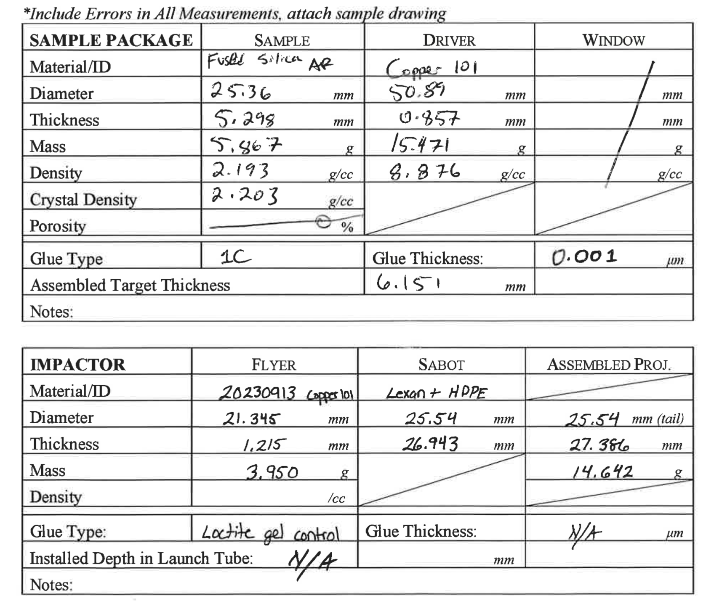
MAVIS Impact Velocity system#
MAVIS inter-coil distance = 50.00 mm
Time of Flight = 9.3406+/- 0.0056 us
Velocity = 5.353 +/- 0.0039 km/s
Anaysis file: MAVIS_Velocity_Analysis_v2.py

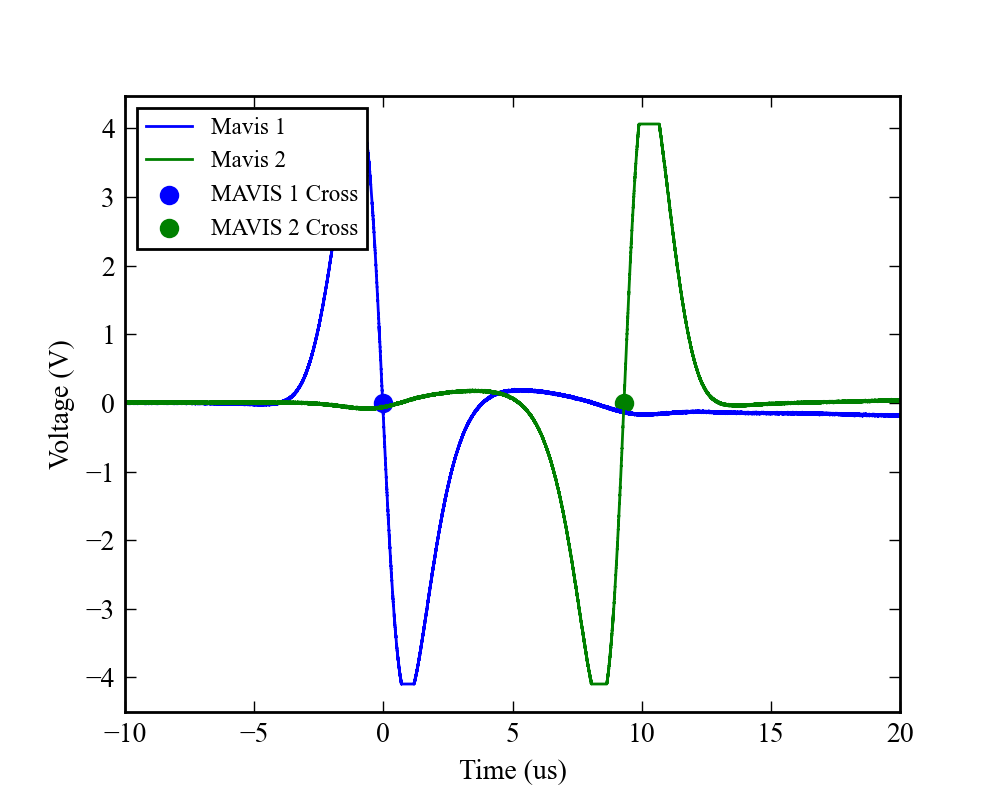
PDV Signals#
3 channels; no signal in sample.
PDV fibers and pyro fiber is touching free surface.

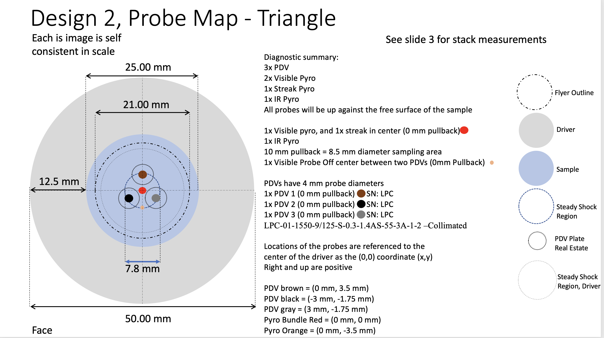
PDV Shock Velocities and Transit Thickness#
Using Sandia SMASH-SIHREN2 v2.0 May 2023 to convert to shock front velocities.
This looks like it might be the shock velocity in the fiber? It’s not the sample.
# Load SIHREN2 results - not corrected for offset or index
Ch1_offset = 2609 # m/s
pdv1data = np.loadtxt('shot50/Shot50-PDV-ch1.txt',skiprows=30)
pdv1data[:,0]-=pdv1data[0,0]
pdv1data[:,0]*=1.e6
#pdv1data[:,0]-=.06
pdv1data[:,1]+=Ch1_offset
pdv1data[:,1]/=1.444
Ch2_offset = 3736 # m/s
# n = 1.444
pdv2data = np.loadtxt('shot50/Shot50-PDV-ch2.txt',skiprows=30)
pdv2data[:,0]-=pdv2data[0,0]
pdv2data[:,0]*=1.e6
pdv2data[:,0]-=.03
pdv2data[:,1]+=Ch2_offset
pdv2data[:,1]/=1.444
Ch3_offset = 4468.8 # m/s
# n = 1.444
pdv3data = np.loadtxt('shot50/Shot50-PDV-ch3.txt',skiprows=30)
pdv3data[:,0]-=pdv3data[0,0]
pdv3data[:,0]*=1.e6
pdv3data[:,0]-=.045
pdv3data[:,1]+=Ch3_offset
pdv3data[:,1]/=1.444
plt.plot(pdv1data[:,0],pdv1data[:,1],'-+',label='Ch1')
plt.plot(pdv2data[:,0],pdv2data[:,1],'-+',label='Ch2')
plt.plot(pdv3data[:,0],pdv3data[:,1],'-+',label='Ch3')
plt.plot([0.,0.],[0,10000])
plt.plot([0.6,0.6],[0,10000])
plt.legend()
plt.ylim(3000,8000)
plt.title('Shot 50 PDV')
plt.xlabel('Time (microsec)')
plt.ylabel('Shock Velocity (m/s)')
plt.show()
plt.plot(pdv1data[:,0],pdv1data[:,1],'-+',label='Ch1')
plt.plot(pdv2data[:,0],pdv2data[:,1],'-+',label='Ch2')
plt.plot(pdv3data[:,0],pdv3data[:,1],'-+',label='Ch3')
plt.plot([0.,0.],[0,10000])
plt.plot([0.6,0.6],[0,10000])
plt.legend()
plt.ylim(7000,8000)
plt.title('Shot 50 PDV ')
plt.xlabel('Time (microsec)')
plt.ylabel('Shock Velocity (m/s)')
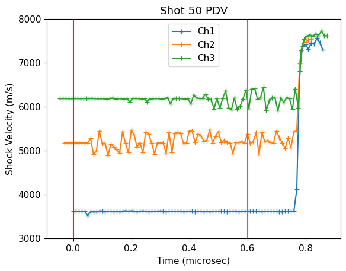
Text(0, 0.5, 'Shock Velocity (m/s)')
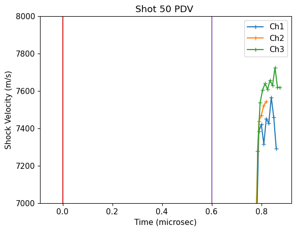
Load Streak Temperature Data#
See calibration and moving average notebook:
UCDavis_GasGunStreak_Direct_Cal_v2.ipynb
Using 20 ns moving average for temperature vs. time.
streak = np.loadtxt('shot50/S050_Lineout_timeprofile_620-660nm.txt',skiprows=2,delimiter=',')
calstreak = np.loadtxt('shot50/S050_TemperatureProfile_-1000-1000ns_20nsWindow.txt',skiprows=2,delimiter=',')
streak[:,0]+=-.035
calstreak[:,0]+=-.035
#plt.plot(streak[:,0],np.power(streak[:,1],.25)/1860*5100,label='scaled counts')
#plt.plot([-.2,1],[5100,5100])
#plt.plot([-.2,1],[3900,3900])
plt.xlim(-.5,1)
tdecay = 0.45
tend = 0.74
tkink = 0.64
plt.plot(calstreak[:,0],calstreak[:,1])
plt.fill_between(calstreak[:,0],calstreak[:,1]-calstreak[:,2],calstreak[:,1]+calstreak[:,2], color='blue', alpha = 0.1)
plt.plot([0.,0.],[0,6000])
plt.plot([tend,tend],[0,6000])
plt.plot([tdecay,tdecay],[0,6000])
plt.plot([tkink,tkink],[0,6000])
plt.title('Shot 50 Streak Temperature R=0')
plt.xlabel('Time (microsec)')
plt.ylabel('Temperature (K)')
plt.ylim(2000,6000)
plt.show()
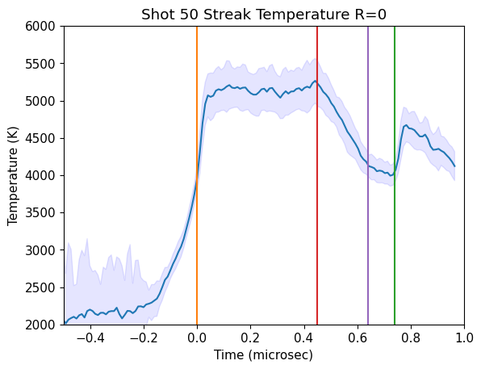
#plt.plot(streak[:,0],np.power(streak[:,1],.25)/1860*5100,label='scaled counts')
#plt.plot([-.2,1],[5100,5100])
#plt.plot([-.2,1],[3900,3900])
plt.xlim(-.5,1)
#
tdecay = 0.45
tend = 0.74
tkink = 0.64
plt.plot(streak[:,0],streak[:,1])
#plt.fill_between(cstreak[:,0],calstreak[:,1]-calstreak[:,2],calstreak[:,1]+calstreak[:,2], color='blue', alpha = 0.1)
plt.plot([0.,0.],[0,6000])
plt.plot([tend,tend],[0,6000])
plt.plot([tdecay,tdecay],[0,6000])
plt.plot([tkink,tkink],[0,6000])
plt.title('Shot 50 Streak Temperature R=0')
plt.xlabel('Time (microsec)')
#plt.ylabel('Temperature (K)')
#plt.ylim(2000,6000)
plt.show()
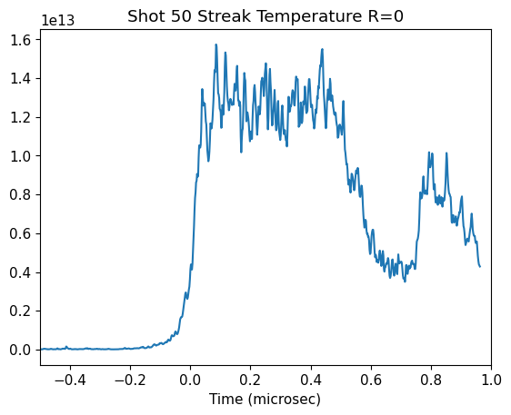
The temperature profile shows a steady region, decay region and then nearly steady region again. The nearly steady region is a wave interaction with the driver based on pyKO simulations.
Construct Plausible Shock Velocity vs. Time#
usstart=7620 # Based on impedance match solution
# pressure in IM solution 5/6/2025
usstart = np.interp(68.06,fs_hug_stv.P,fs_hug_stv.us)*1000 # m/s
print(usstart)
fittime = calstreak[:,0]
usfit = np.zeros(len(fittime))
ind = np.where((fittime>0) & (fittime<tdecay))[0]
usfit[ind]=usstart
ind = np.where((fittime>tdecay))[0]
usfit[ind]=(10000)*(tdecay-fittime[ind])+usstart
ind = np.where((fittime>tkink))[0]
usfit[ind]=np.interp(tkink,fittime,usfit)
ind = np.where((fittime>tend))[0]
usfit[ind]=0.
fitus2=np.copy(usfit)
plt.plot(fittime,fitus2)
#plt.plot([0.,0.],[0,8000])
#plt.plot([tend,tend],[0,8000])
#plt.plot(pdv1data[:,0],pdv1data[:,1],'-+',label='Ch1')
#plt.plot(pdv2data[:,0],pdv2data[:,1],'-+',label='Ch2')
#plt.plot(pdv3data[:,0],pdv3data[:,1],'-+',label='Ch3')
plt.xlabel('Time (microsec)')
plt.ylabel('Shock velocity (m/s)')
plt.plot([tkink,tkink],[0,8000])
# use the model for solid fs hugoniot region to extract corresponding P and up
pfit = np.interp(usfit/1.e3,fs_hug_stv.us,fs_hug_stv.P)
ind = np.where(calstreak[:,0]<0)[0]
pfit[ind]=0
upfit = np.interp(usfit/1.e3,fs_hug_stv.us,fs_hug_stv.up)
ind = np.where(calstreak[:,0]<0)[0]
upfit[ind]=0
print(usstart,usfit)
plt.show()
7619.740035122438
7619.740035122438 [ 0. 0. 0. 0. 0.
0. 0. 0. 0. 0.
0. 0. 0. 0. 0.
0. 0. 0. 0. 0.
0. 0. 0. 0. 0.
0. 0. 0. 0. 0.
0. 0. 0. 0. 0.
0. 0. 0. 0. 0.
0. 0. 0. 0. 0.
0. 0. 0. 0. 0.
0. 0. 0. 0. 0.
0. 0. 0. 0. 0.
0. 0. 0. 0. 0.
0. 0. 0. 0. 0.
0. 0. 0. 0. 0.
0. 0. 0. 0. 0.
0. 0. 0. 0. 0.
0. 0. 0. 0. 0.
0. 0. 0. 0. 0.
0. 0. 0. 0. 0.
0. 0. 0. 7619.74003512 7619.74003512
7619.74003512 7619.74003512 7619.74003512 7619.74003512 7619.74003512
7619.74003512 7619.74003512 7619.74003512 7619.74003512 7619.74003512
7619.74003512 7619.74003512 7619.74003512 7619.74003512 7619.74003512
7619.74003512 7619.74003512 7619.74003512 7619.74003512 7619.74003512
7619.74003512 7619.74003512 7619.74003512 7619.74003512 7619.74003512
7619.74003512 7619.74003512 7619.74003512 7619.74003512 7619.74003512
7619.74003512 7619.74003512 7619.74003512 7619.74003512 7619.74003512
7619.74003512 7619.74003512 7619.74003512 7619.74003512 7619.74003512
7619.74003512 7619.74003512 7619.74003512 7595.36817583 7494.86566326
7394.3631507 7293.86063814 7193.35812557 7092.85561301 6992.35310045
6891.85058789 6791.34807532 6690.84556276 6590.3430502 6489.84053764
6389.33802507 6288.83551251 6188.33299995 6087.83048738 5987.32797482
5886.82546226 5786.3229497 5719.74003512 5719.74003512 5719.74003512
5719.74003512 5719.74003512 5719.74003512 5719.74003512 5719.74003512
5719.74003512 5719.74003512 0. 0. 0.
0. 0. 0. 0. 0.
0. 0. 0. 0. 0.
0. 0. 0. 0. 0.
0. 0. 0. 0. 0. ]
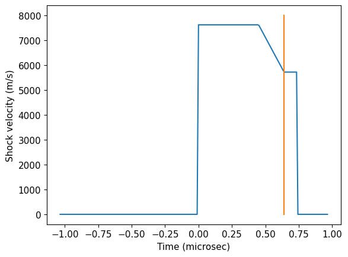
# convert Us to P using the liquid region fused silica fit
# latest version in scripts/define_eos.py
#fsresliq = [-0.01452743, 1.69390958, 1.15979627]
#fs_hug_liq.us = fsresliq[2]+fsresliq[1]*fs_hug_liq.up+fsresliq[0]*fs_hug_liq.up*fs_hug_liq.up # km/s
#fs_hug_liq.P = fs_hug_liq.rho_ref*fs_hug_liq.up*fs_hug_liq.us
fitpres2 = np.interp(usfit/1.e3,fs_hug_stv.us,fs_hug_stv.P)
fitup2 = np.interp(usfit/1.e3,fs_hug_stv.us,fs_hug_stv.up)
# fix the very first point at time zero
#ind0 = np.where(np.abs(pdv2data[:,0])<1.e-10)[0]
#print(ind0)
#pdv2data[ind0,0]=0.0
#fitpres2[ind0]=fitpres2[ind0+1]
#print(pdv2data[ind0+1,0]) #.01 microsec
# zero out earlier time pressures
ind = np.where(fitus2[:]<0)[0]
fitpres2[ind]=0
fitup2[ind]=0
#print(fitup2)
# print last particle velocity before breakout
ind = np.where(fittime<tend)[0]
print(fitup2[max(ind)])
lastup2 = fitup2[max(ind)]
lastp2 = fitpres2[max(ind)]
plt.plot(fittime,fitpres2,'-+')
plt.plot([0.,0.],[0,100])
plt.plot([tend,tend],[0,100])
plt.plot([tkink,tkink],[0,100])
plt.title('Shot 50')
plt.xlabel('Time (microsec)')
plt.ylabel('Pressure (GPa)')
plt.show()
print('Pressure at the kink around (GPa)',np.interp(tkink,fittime,fitpres2))
plt.plot(fittime,fitup2,'-+')
plt.plot([0.,0.],[0,6])
plt.plot([tend,tend],[0,6])
plt.plot([tkink,tend],[lastup2,lastup2])
plt.title('Shot 50')
plt.xlabel('Time (microsec)')
plt.ylabel('Particle velocity (km/s)')
plt.show()
2.8703381912385595
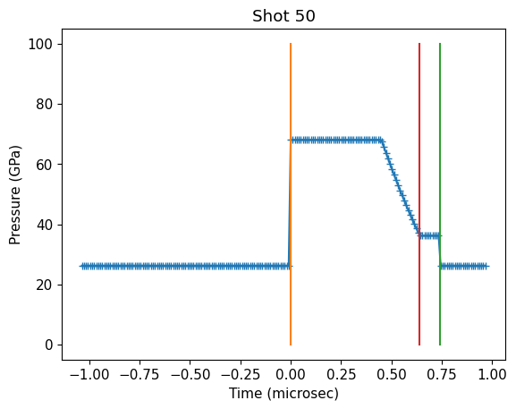
Pressure at the kink around (GPa) 36.50488380280096
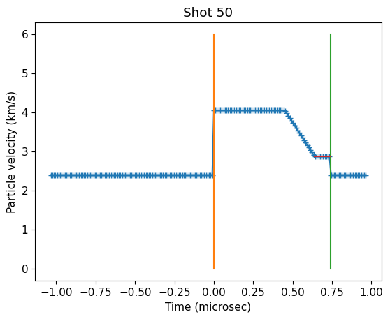
# check thickness
xpos2 = [0.]
for i in range(1,len(calstreak[:,0])):
dt = calstreak[i,0]-calstreak[i-1,0]
x2=usfit[i]*dt+xpos2[i-1]
xpos2.append(x2)
xpos2 = np.asarray(xpos2)
print('Shock travel distance for model shock vel profile in mm = ',max(xpos2/1.e3))
print('Actual target thickness in center = 5.297+-0.0015 mm')
Shock travel distance for model shock vel profile in mm = 5.2986107298913145
Actual target thickness in center = 5.297+-0.0015 mm
s50time = fittime
s50temp = np.copy(calstreak[:,1])
s50temperr = np.copy(calstreak[:,2])
s50pres = fitpres2
s50us = fitus2
s50up = fitup2
ind = np.where(s50time<0)[0]
s50temp[ind]=0.
s50pres[ind]=0.
#s50temp[max(ind):max(ind)+9]=0.
#s50pres[max(ind):max(ind)+9]=0.
ind = np.where(s50time>tend)[0]
s50temp[ind]=0.
s50pres[ind]=0.
# average top of the shock wave
t1=0.1 # microsec
t2=0.2
itop = np.where((s50time > t1) & (s50time < t2))[0]
print(np.mean(s50pres[itop]),np.std(s50pres[itop]))
print(np.mean(s50temp[itop]),np.std(s50temp[itop]))
Tsteady = np.mean(s50temp[itop])
Tsteady_err = np.mean(s50temperr[itop])
Psteady = np.mean(s50pres[itop])
# remove the time period where the temperature is still rising in the streak camera
ind50 = np.where((s50time > 0.025) & (s50time <tend))[0]
plt.plot(s50time,s50temp,'+')
plt.plot(s50time[ind50],s50temp[ind50],'+')
plt.fill_between(s50time[ind50],s50temp[ind50]-s50temperr[ind50],s50temp[ind50]+s50temperr[ind50], color='blue', alpha = 0.1)
plt.ylim(2000,6000)
plt.xlim(-.1,.8)
plt.plot([.1,.1],[4000,6500])
plt.plot([.2,.2],[4000,6500])
plt.xlabel('Time (microsec)')
plt.ylabel('Temperature (K)')
plt.title('Shot 50 Fused Silica Decay: Streak Camera and contrained P')
print(Tsteady_err)
#Tsteady_err=250
plt.plot([.15],[Tsteady],'rD')
plt.plot([.15],[Tsteady+Tsteady_err],'rD')
plt.plot([.15],[Tsteady-Tsteady_err],'rD')
plt.show()
plt.plot(s50time[ind50],s50pres[ind50],'+')
plt.ylabel('Pressure (GPa)')
plt.xlabel('Time (microsec)')
plt.title('Shot 50 Fused Silica Decay: Streak Camera and constrained P')
plt.show()
isort = np.argsort(s50pres[ind50])
#print(isort)
plt.plot(s50pres[ind50],s50temp[ind50],'+')
plt.fill_between(s50pres[ind50[isort]],s50temp[ind50[isort]]-s50temperr[ind50[isort]],s50temp[ind50[isort]]+s50temperr[ind50[isort]], color='blue', alpha = 0.1)
plt.ylim(3000,5500)
plt.xlabel('Pressure (GPa)')
plt.ylabel('Temperature (K)')
plt.title('Shot 50 Fused Silica Decay: Streak Camera and constrained P')
plt.show()
68.05999999999999 1.4210854715202004e-14
5170.920498064298 19.364571422900298
292.00997504453255
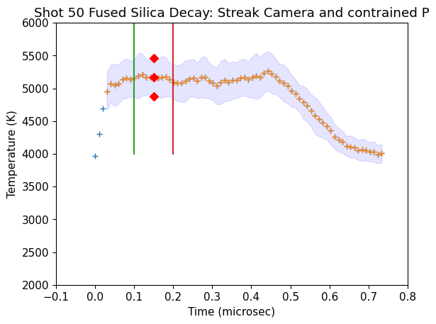
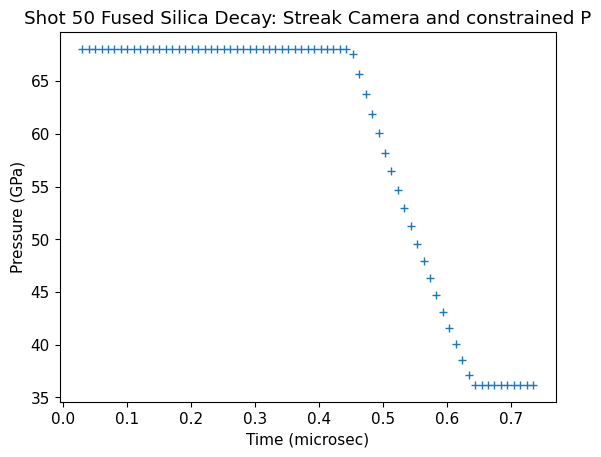
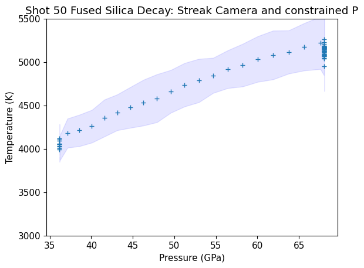
# estimate expected temperature before breakout
lasttemp = np.interp(lastup2,fs_hug_stv.up,fs_hug_stv.T)
print(lastup2,lasttemp)
print(Tsteady,Tsteady_err)
print(Psteady)
---------------------------------------------------------------------------
ValueError Traceback (most recent call last)
Cell In[11], line 3
1 # estimate expected temperature before breakout
2
----> 3 lasttemp = np.interp(lastup2,fs_hug_stv.up,fs_hug_stv.T)
4 print(lastup2,lasttemp)
5 print(Tsteady,Tsteady_err)
6 print(Psteady)
File /opt/hostedtoolcache/Python/3.13.16/x64/lib/python3.13/site-packages/numpy/lib/_function_base_impl.py:1642, in interp(x, xp, fp, left, right, period)
1639 xp = np.concatenate((xp[-1:]-period, xp, xp[0:1]+period))
1640 fp = np.concatenate((fp[-1:], fp, fp[0:1]))
-> 1642 return interp_func(x, xp, fp, left, right)
ValueError: fp and xp are not of the same length.
Plot with other fused silica data#
plt.xlabel('Pressure (GPa)')
plt.ylabel('Temperature (K)')
plt.title('Shot 50 Fused Silica Decay: Streak Camera and constrained P')
plt.plot(s50pres[ind50],s50temp[ind50],'+',color='orange',label='Shot 50')
plt.fill_between(s50pres[ind50[isort]],s50temp[ind50[isort]]-s50temperr[ind50[isort]],s50temp[ind50[isort]]+s50temperr[ind50[isort]], color='blue', alpha = 0.1)
if 1:
#plt.errorbar(shockdat_list[B88fs['id']].P,shockdat_list[B88fs['id']].T,fmt='bo',mfc='white',yerr=shockdat_list[B88fs['id']].T_std,label=B88fs['lab'])
ind = np.where(shockdat_list[B88RRfs['id']].T>0)
plt.errorbar(shockdat_list[B88RRfs['id']].P[ind],shockdat_list[B88RRfs['id']].T[ind],fmt='bo',mfc='lightblue',yerr=shockdat_list[B88RRfs['id']].T_std[ind],label=B88RRfs['lab'])
plt.errorbar(shockdat_list[S80fs['id']].P,shockdat_list[S80fs['id']].T,fmt='bv',xerr=shockdat_list[S80fs['id']].P_std,yerr=shockdat_list[S80fs['id']].T_std,label=S80fs['lab'])
plt.errorbar(shockdat_list[S81fs['id']].P,shockdat_list[S81fs['id']].T,fmt='bx',label=S81fs['lab'])
plt.xlim(20,120)
plt.ylim(2500,8000)
plt.plot(stsmcsmooth.P,stsmcsmooth.T,'m-',linewidth=3,label='Proposed melt curve')
plt.plot([lastp2],[lasttemp],'rD',label='T end based on P')
plt.legend()
plt.savefig(outputfigpath+'shot50-comp-data.png')
plt.show()
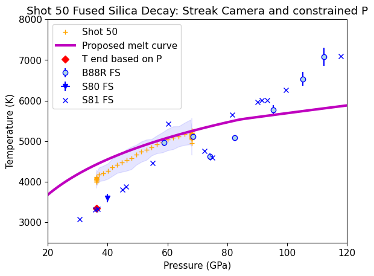
Compare to Omega Fused Silica decaying shock#
plt.plot(shockdat[iMDfs69691.i].us,shockdat[iMDfs69691.i].T*20,'.',label='Omega counts scaled')
plt.ylim(0,15000)
plt.xlim(5.,10)
plt.plot(s50us[ind50]/1.e3,s50temp[ind50],'+',color='orange',label='Shot 50 T(K)')
plt.fill_between(s50us[ind50[isort]]/1.e3,s50temp[ind50[isort]]-s50temperr[ind50[isort]],s50temp[ind50[isort]]+s50temperr[ind50[isort]], color='blue', alpha = 0.1)
plt.xlabel('Shock Velocity (km/s)')
plt.ylabel('Omega SOP counts [arb] and Shot 50 T (K)')
plt.title('Fused Silica Thermal Emission Inversion')
plt.legend()
plt.savefig(outputfigpath+'shot50-withomega.png')
plt.show()
#'rasterized=True'
print('Transition pressures: ',fs_wiggle_P1, fs_wiggle_P2)
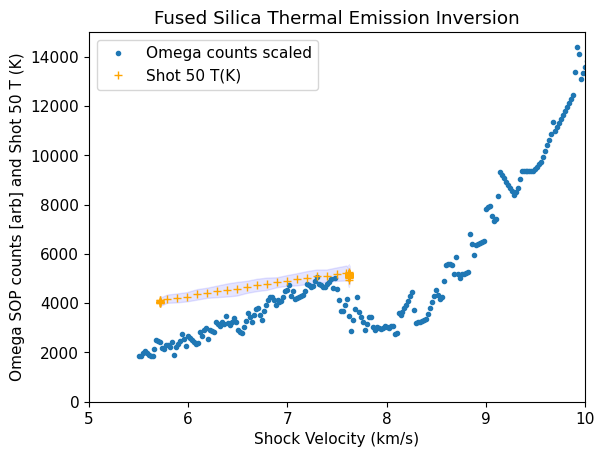
Transition pressures: 65.75879401343992 73.53695488293766
PDV release velocity#
No index correction for free surface particle velocity.
pdv1datab = np.loadtxt('shot50/Shot50-PDV-ch1-breakout.txt',skiprows=30)
pdv1datab[:,0]-=pdv1datab[0,0]
pdv1datab[:,0]*=1.e6
pdv1datab[:,1]+=Ch1_offset
pdv2datab = np.loadtxt('shot50/Shot50-PDV-ch2-breakout.txt',skiprows=30)
pdv2datab[:,0]-=pdv2datab[0,0]
pdv2datab[:,0]*=1.e6
pdv2datab[:,0]-=.05
pdv2datab[:,1]+=Ch2_offset
pdv3datab = np.loadtxt('shot50/Shot50-PDV-ch3-breakout.txt',skiprows=30)
pdv3datab[:,0]-=pdv3datab[0,0]
pdv3datab[:,0]*=1.e6
pdv3datab[:,0]-=.27
pdv3datab[:,1]+=Ch3_offset
plt.plot(pdv1datab[:,0],pdv1datab[:,1],'-+',label='Ch1')
plt.plot(pdv2datab[:,0],pdv2datab[:,1],'-+',label='Ch2')
plt.plot(pdv3datab[:,0],pdv3datab[:,1],'-+',label='Ch3')
plt.plot([0,1.2],[lastup2*2*1.e3,lastup2*2*1.e3],label='2*up')
plt.xlim(-.1,1.3)
plt.legend(loc='upper left')
plt.title('Shot 50 PDV breakout')
plt.xlabel('Time after breakout (microsec)')
plt.ylabel('Particle Velocity (m/s)')
plt.savefig(outputfigpath+'shot50-release-vel.png')
plt.show()
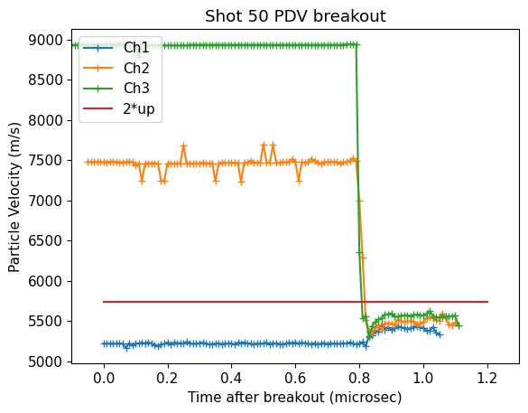
The release velocities are close to free surface doubling with the decay and plateau profile.
NIR Pyro data#
see Master_IR.ipynb
class IR:
def __init__(self, temps, data):
self.c1 = 1.19118*1.e-16
self.c2 = 1.4388*1.e-2
self.wvln_cal = 0.
self.n = len(temps)
self.T_cal = np.zeros(self.n)
self.Tr_max = 0.
self.T_max = 0.
self.K = np.zeros(self.n)
self.K_er = np.zeros(self.n)
self.Sc = np.zeros(self.n)
self.Sc_er = np.zeros(self.n)
self.Kavg = 0.
self.Kavg_er = 0.
self.calctemp = 0.
self.em = 0.
self.em_er = 0.
self.em_r = 0.
self.em_r_er = 0.
self.dark = 0
self.dark_er = 0.
self.ND = 0.
self.L_cor = 0.
self.L_cor_er = 0.
self.abs_coeff = 0.
self.abs_u = 0.
self.T_high = 0.
self.T_low = 0.
self.L_new_high = 0.
self.L_new_low = 0.
self.abs_shock = 0.
self.abs_shock_high = 0.
self.abs_shock_low = 0.
self.avg_release_L = 0.
self.avg_release_Tr = 0.
self.avg_release_T = 0.
self.rel_percent_er = 0.
self.Tr = np.zeros(len(data))
self.Tr_er = np.zeros(len(data))
self.T = np.zeros(len(data))
self.T_er = np.zeros(len(data))
self.L = np.zeros(len(data))
self.L_er = np.zeros(len(data))
self.L_rad = np.zeros(len(data))
self.L_rad_er = np.zeros(len(data))
self.L_plus = np.zeros(len(data))
self.L_minus = np.zeros(len(data))
self.L_rad_plus = np.zeros(len(data))
self.L_rad_minus = np.zeros(len(data))
self.shot_V = []
self.shot_t = []
self.L_fit_error = 0.
self.rel_L_er = 0.
self.ni = 0.
def calibrate(self, wavelength, temperature, Sc, Sc_er):
self.wvln_cal = wavelength * 1.e-6
for i in range(self.n):
self.T_cal[i] = temperature[i] + 273.
self.Sc = Sc
self.Sc_er = Sc_er
for i in range(self.n):
self.K[i] = self.Sc[i]*(np.exp(self.c2/(self.wvln_cal*self.T_cal[i]))-1)
for i in range(self.n):
self.K_er[i] = np.sqrt(((((np.exp(self.c2/(self.wvln_cal*self.T_cal[i])))-1)**2)*((self.Sc_er[i])**2))+(((-self.Sc[i]*(self.c2/(self.wvln_cal*(self.T_cal[i])**2))*np.exp(self.c2/(self.wvln_cal*self.T_cal[i])))**2)*(self.T_cal[i]*0.02)**2))
self.Kavg = np.average(self.K, weights=(1/(self.K_er**2)))
self.Kavg_er = 1/(np.sum((1/((self.K_er)**2))))
def calcT(self, data_V, data_t, wavelength, ND, emissivity, emissivity_error):
FR=abs((self.ni - 1) / (self.ni + 1))**2
self.wvln = wavelength *1.e-6
self.em = emissivity
self.em_er = emissivity_error
self.ND = ND
self.data_V = data_V
self.shot_t = data_t
findDark(self)
self.shot_V = (self.dark-self.data_V)*self.ND
self.Tr_max = self.c2/(self.wvln_cal*np.log(self.Kavg/5 +1))
self.T_max = self.c2/(self.wvln*np.log(self.em*np.exp(self.c2/(self.wvln*self.Tr_max))+1))
for i in range(len(self.shot_V)):
if (self.shot_V[i]>0):
self.Tr[i] = self.c2/(self.wvln*np.log(self.Kavg/self.shot_V[i] +1))
self.Tr_er[i] = np.sqrt(((((-self.c2)/(self.wvln*(self.Kavg+self.shot_V[i])*((np.log((self.Kavg/self.shot_V[i])+1))**2)))**2)*(self.Kavg_er**2))+((((self.c2*self.Kavg)/(self.wvln*((np.log((self.Kavg/self.shot_V[i])+1))**2)*self.shot_V[i]*(self.shot_V[i]+self.Kavg)))**2)*(0.001**2)))
else:
self.Tr[i] = self.c2/(self.wvln*np.log(self.Kavg/0.000001 +1))
self.Tr_er[i] = np.sqrt((((-self.c2/self.wvln)*(1/(self.Kavg*(np.log(self.Kavg/0.00001))**2)))**2)*(self.Kavg_er**2)+(((self.c2/self.wvln)*(1/(0.00001*(np.log(self.Kavg/0.00001))**2)))**2)*(0.0001**2))
for i in range(len(self.shot_V)):
self.T[i] = self.c2/(self.wvln*(np.log(self.em*(np.exp(self.c2/(self.wvln*self.Tr[i]))-1)+1)))
self.L[i] = self.c1/((self.wvln**5)*(np.exp(self.c2/(self.wvln*self.T[i]))-1)) * (1+FR)
self.T_er[i] = np.sqrt((((((self.c2**2)*self.em*np.exp(self.c2/(self.wvln*self.Tr[i])))/((self.wvln**2)*(self.Tr[i]**2)*(self.em*(np.exp(self.c2/(self.wvln*self.Tr[i]))-1)+1)*(((np.log(self.em*(np.exp(self.c2/(self.wvln*self.Tr[i]))-1)))**2) +1)))**2)*(self.Tr_er[i]**2)) + (((-1*self.c2*(np.exp((self.c2/(self.wvln*self.Tr[i])))-1))/(self.wvln*((np.exp((self.c2/(self.wvln*self.Tr[i])))-1)*self.em+1)*np.log((np.exp((self.c2/(self.wvln*self.Tr[i])))-1)*self.em+1)**2))**2)*(self.em_er**2))
self.L_plus[i] = self.c1/((self.wvln**5)*(np.exp(self.c2/(self.wvln*(self.T[i]+self.T_er[i])))-1)) * (1+FR)
self.L_minus[i] = self.c1/((self.wvln**5)*(np.exp(self.c2/(self.wvln*(self.T[i]-self.T_er[i])))-1)) * (1+FR)
#self.L_er[i] = np.sqrt((((((self.c2**2)*(self.wvln**4)*np.exp(self.c2/(self.wvln*self.T[i])))/((self.T[i]**2)*((self.wvln**5)*np.exp(self.c2/(self.wvln*self.T[i]))-1)**2))**2)*(self.T_er[i])**2))
self.L_er[i] = np.sqrt((((self.c1*self.c2*np.exp(self.c2/(self.wvln*self.T[i])))/(self.wvln**6*self.T[i]*(np.exp(self.c2/(self.wvln*self.T[i]))-1)**2))*(self.T_er[i])**2))
for i in range(len(self.shot_V)):
self.L_rad[i] = self.c1/((self.wvln**5)*(np.exp(self.c2/(self.wvln*self.Tr[i]))-1)) * (1+FR)
self.L_rad_er[i] = np.sqrt((((self.c1*self.c2*np.exp(self.c2/(self.wvln*self.Tr[i])))/(self.wvln**6*self.Tr[i]*(np.exp(self.c2/(self.wvln*self.Tr[i]))-1)**2))*(self.Tr_er[i])**2))
#self.L_rad_er[i] = np.sqrt((((((self.c2**2)*(self.wvln**4)*np.exp(self.c2/(self.wvln*self.Tr[i])))/((self.Tr[i]**2)*((self.wvln**5)*np.exp(self.c2/(self.wvln*self.Tr[i]))-1)**2))**2)*(self.Tr_er[i])**2))
#self.L_rad_plus[i] = self.c1/((self.wvln**5)*(np.exp(self.c2/(self.wvln*(self.Tr[i]+self.Tr_er[i])))-1))
#self.L_rad_minus[i] = self.c1/((self.wvln**5)*(np.exp(self.c2/(self.wvln*(self.Tr[i]-self.Tr_er[i])))-1))
self.L_rad_plus[i] = self.L_rad[i] + self.L_rad_er[i]
self.L_rad_minus[i] = self.L_rad[i] - self.L_rad_er[i]
def calcTrueT(self,fitL):
Tr_fit = solveT(self,fitL)
self.T = self.c2/(self.wvln*(np.log(self.em*(np.exp(self.c2/(self.wvln*Tr_fit))-1)+1)))
self.L_cor = self.c1/((self.wvln**5)*(np.exp(self.c2/(self.wvln*self.T))-1))
self.L_cor_er = np.sqrt((((((self.c2**2)*(self.wvln**4)*np.exp(self.c2/(self.wvln*self.T)))/((self.T**2)*((self.wvln**5)*np.exp(self.c2/(self.wvln*self.T))-1)**2))**2)*(self.T_er)**2)-((self.c2*(np.exp((self.c2/(self.wvln*self.T)))-1))/(self.wvln*((np.exp((self.c2/(self.wvln*self.T)))-1)*self.em+1)*np.log((np.exp((self.c2/(self.wvln*self.T)))-1)*self.em+1)**2))*(self.em_er**2))
def collect(self,abs_coeff,Ter_high, Ter_low, L_high, L_low, absshock, shockhigh, shocklow):
self.abs_coeff = abs_coeff
self.T_high = Ter_high
self.T_low = Ter_low
self.L_new_high = L_high
self.L_new_low = L_low
self.abs_shock = absshock
self.abs_shock_high = shockhigh
self.abs_shock_low = shocklow
def calcT_OLD(self, data_V, data_t, dark, wavelength, ND, emissivity):
self.wvln = wavelength *1.e-6
self.em = emissivity
self.ND = ND
self.dark = dark
self.data_V = data_V
self.shot_V = (self.dark-self.data_V)*self.ND
self.shot_t = data_t
self.Tr_max = self.c2/(self.wvln_cal*np.log(self.Kavg/5 +1))
self.T_max = self.c2/(self.wvln*np.log(self.em*np.exp(self.c2/(self.wvln*self.Tr_max))+1))
for i in range(len(self.shot_V)):
if (self.shot_V[i]>0):
self.Tr[i] = self.c2/(self.wvln*np.log(self.Kavg/self.shot_V[i] +1))
self.Tr_er[i] = np.sqrt(((((-self.c2)/(self.wvln*(self.Kavg+self.shot_V[i])*((np.log((self.Kavg/self.shot_V[i])+1))**2)))**2)*(self.Kavg_er**2))+((((self.c2*self.Kavg)/(self.wvln*((np.log((self.Kavg/self.shot_V[i])+1))**2)*self.shot_V[i]*(self.shot_V[i]+self.Kavg)))**2)*(0.001**2)))
else:
self.Tr[i] = self.c2/(self.wvln*np.log(self.Kavg/0.000001 +1))
self.Tr_er[i] = np.sqrt((((-self.c2/self.wvln)*(1/(self.Kavg*(np.log(self.Kavg/0.00001))**2)))**2)*(self.Kavg_er**2)+(((self.c2/self.wvln)*(1/(0.00001*(np.log(self.Kavg/0.00001))**2)))**2)*(0.0001**2))
for i in range(len(self.shot_V)):
self.T[i] = self.c2/(self.wvln*(np.log(self.em*(np.exp(self.c2/(self.wvln*self.Tr[i]))-1)+1)))
self.L[i] = self.c1/((self.wvln**5)*(np.exp(self.c2/(self.wvln*self.T[i]))-1))
self.T_er[i] = np.sqrt(((((self.c2**2)*self.em*np.exp(self.c2/(self.wvln*self.Tr[i])))/((self.wvln**2)*(self.Tr[i]**2)*(self.em*(np.exp(self.c2/(self.wvln*self.Tr[i]))-1)+1)*(((np.log(self.em*(np.exp(self.c2/(self.wvln*self.Tr[i]))-1)))**2) +1)))**2)*(self.Tr_er[i]**2))
self.L_er[i] = np.sqrt((((((self.c2**2)*(self.wvln**4)*np.exp(self.c2/(self.wvln*self.T[i])))/((self.T[i]**2)*((self.wvln**5)*np.exp(self.c2/(self.wvln*self.T[i]))-1)**2))**2)*(self.T_er[i])**2))
def fitShock(self, print_result, toffset, start, us, samplethick, sampleT):
self.shift_time = np.zeros(len(self.shot_t))
R1 = 0. #driver-sample
R2 = 0. #shock front
R3 = findR(self.ni)
for i in range(len(self.shot_t)):
self.shift_time[i] = self.shot_t[i]+toffset/1.e6
find_ind = np.where((self.shift_time > start/1.e6) & (self.shift_time < (samplethick/us)))
ind=len(find_ind[0])
self.new_time = np.zeros(ind)
self.new_L = np.zeros(ind)
self.L_high = np.zeros(ind)
self.L_low = np.zeros(ind)
if print_result == 1:
print('transit time = ',(samplethick/us)*1.e9)
transittime = samplethick/us
j=0
for i in range(len(self.shift_time)):
if ((start*1.e-6 < self.shift_time[i]) and (self.shift_time[i] < transittime)):
self.new_time[j] = self.shift_time[i]
self.new_L[j] = self.L[i]
self.L_high[j] = self.L_plus[i]
self.L_low[j] = self.L_minus[i]
j+=1
self.fit_a_only = np.zeros(len(self.new_time))
self.no_param_fit = np.zeros(len(self.new_time))
self.fit_a_L = np.zeros(len(self.new_time))
self.fit_L_high = np.zeros(len(self.new_time))
self.fit_L_low = np.zeros(len(self.new_time))
#functions used into below curve_fit.
#Variable a is the shocked abs and b is the luminosity of the sample.
func_1 = lambda x,a: (1-R2)*(1-R3)*findL(sampleT,self.wvln)*(1-np.exp(-a*(us*x)))*np.exp(-self.abs_u*((samplethick-(us*x))))
func_2 = lambda x,a,b: (1-R2)*(1-R3)*b*(1-np.exp(-a*(us*x)))*np.exp(-self.abs_u*((samplethick-(us*x))))
func_3 = lambda x,a,b: (1-R2)*(1-R3)*b*(1-np.exp(-a*(us*x)))*np.exp(-(self.abs_u+(0.2*self.abs_u))*((samplethick-(us*x))))
func_4 = lambda x,a,b: (1-R2)*(1-R3)*b*(1-np.exp(-a*(us*x)))*np.exp(-(self.abs_u-(0.2*self.abs_u))*((samplethick-(us*x))))
Lguess=findL(sampleT,self.wvln)
aguess=1000.
fita,fitb = optimize.curve_fit(func_1, self.new_time, self.new_L, p0=[aguess]) #fitting a
fitc,fitd = optimize.curve_fit(func_2, self.new_time, self.new_L, p0=[aguess,Lguess]) #fitting a,L
self.fit_high,self.fit_high_er = optimize.curve_fit(func_2, self.new_time, self.L_high, p0=[aguess,Lguess])
self.fit_low,self.fit_low_er = optimize.curve_fit(func_2, self.new_time, self.L_low, p0=[aguess,Lguess])
if print_result == 1:
print('fitting for shock abs coeff in m^-1. First is best fit output second is estimated covariance of the fit.\n')
print('for IR channel',self.wvln)
print('abs_shock only',fita,fitb)
print('abs_shock and L',fitc,fitd)
print('temperature',findT(fitc[1],self.wvln))
print('high',self.fit_high,self.fit_high_er)
print('low',self.fit_low,self.fit_low_er)
self.fit_abs_s = fitc[0]
self.fit_L = fitc[1]
self.fit_abs_s_high = self.fit_high[0]
self.fit_abs_s_low = self.fit_low[0]
self.fit_rad_high = self.fit_high[1]
self.fit_rad_low = self.fit_low[1]
self.plot_time = np.linspace(0,transittime,len(self.new_time))
#using coefficient fits from above:
for i in range(len(self.plot_time)):
self.fit_a_only[i] = (1-R2)*(1-R3)*findL(sampleT,self.wvln)*(1-np.exp(-fita*(us*self.plot_time[i])))*np.exp(-self.abs_u*((samplethick-(us*self.plot_time[i]))))
self.no_param_fit[i] = (1-R2)*(1-R3)*findL(sampleT,self.wvln)*(1.)*np.exp(-self.abs_u*((samplethick-(us*self.plot_time[i]))))
self.fit_a_L[i] = (1-R2)*(1-R3)*self.fit_L*(1-np.exp(-self.fit_abs_s*(us*self.plot_time[i])))*np.exp(-self.abs_u*((samplethick-(us*self.plot_time[i]))))
self.fit_L_high[i] = (1-R2)*(1-R3)*self.fit_high[1]*(1-np.exp(-self.fit_high[0]*(us*self.plot_time[i])))*np.exp(-self.abs_u*((samplethick-(us*self.plot_time[i]))))
self.fit_L_low[i] = (1-R2)*(1-R3)*self.fit_low[1]*(1-np.exp(-self.fit_low[0]*(us*self.plot_time[i])))*np.exp(-self.abs_u*((samplethick-(us*self.plot_time[i]))))
self.L_fit_error = ((self.fit_L-self.fit_low[1])+(self.fit_high[1]-self.fit_L))/2
def fitRelease(self, print_results, rel_window_start, rel_window_end, em, emr):
self.em_r = em
self.em_r_er = emr
print(self.em_r, self.em_r_er)
find_ind = np.where(((rel_window_start*1.e-6 < self.shift_time) & (self.shift_time < rel_window_end*1.e-6)))
ind=len(find_ind[0])
temp_T = np.zeros(len(self.T))
temp_L = np.zeros(len(self.T))
temp_T_er = np.zeros(len(self.T))
temp_L_plus = np.zeros(len(self.T))
temp_L_minus = np.zeros(len(self.T))
temp_L_er = np.zeros(len(self.T))
for i in range(len(self.shot_V)):
temp_T[i] = self.c2/(self.wvln*(np.log(self.em_r*(np.exp(self.c2/(self.wvln*self.Tr[i]))-1)+1)))
temp_L[i] = self.c1/((self.wvln**5)*(np.exp(self.c2/(self.wvln*temp_T[i]))-1))
temp_T_er[i] = np.sqrt((((((self.c2**2)*self.em_r*np.exp(self.c2/(self.wvln*self.Tr[i])))/((self.wvln**2)*(self.Tr[i]**2)*(self.em_r*(np.exp(self.c2/(self.wvln*self.Tr[i]))-1)+1)*(((np.log(self.em_r*(np.exp(self.c2/(self.wvln*self.Tr[i]))-1)))**2) +1)))**2)*(self.Tr_er[i]**2)) + (((-1*self.c2*(np.exp((self.c2/(self.wvln*self.Tr[i])))-1))/(self.wvln*((np.exp((self.c2/(self.wvln*self.Tr[i])))-1)*self.em_r+1)*np.log((np.exp((self.c2/(self.wvln*self.Tr[i])))-1)*self.em_r+1)**2))**2)*(self.em_r_er**2))
temp_L[i] = self.c1/((self.wvln**5)*(np.exp(self.c2/(self.wvln*temp_T[i]))-1))
temp_L_er[i] = np.sqrt((((self.c1*self.c2*np.exp(self.c2/(self.wvln*temp_T[i])))/(self.wvln**6*temp_T[i]*(np.exp(self.c2/(self.wvln*temp_T[i]))-1)**2))*(temp_T_er[i])**2))
print(temp_T_er)
self.temp_rel_L = np.zeros(ind)
self.temp_rel_time = np.zeros(ind)
self.temp_rel_L_er = np.zeros(ind)
self.temp_rel_T = np.zeros(ind)
self.temp_rel_T_er = np.zeros(ind)
j=0
for i in range(len(self.shift_time)):
if ((rel_window_start*1.e-6 < self.shift_time[i]) & (self.shift_time[i] < rel_window_end*1.e-6)):
self.temp_rel_time[j] = self.shift_time[i]
self.temp_rel_L[j] = temp_L[i]
self.temp_rel_L_er[j] = temp_L_er[i]
self.temp_rel_T[j] = temp_T[i]
self.temp_rel_T_er[j] = temp_T_er[i]
j+=1
self.avg_release_L = np.mean(self.temp_rel_L)
self.avg_release_T = np.mean(self.temp_rel_T)
#calcTrueT_rel(self,self.avg_release_Tr)
self.rel_L_er = np.std(self.temp_rel_L)
self.rel_T_er = np.average(self.temp_rel_T_er)
#self.rel_percent_er = self.rel_L_er/self.avg_release_L
if print_results == 1:
print('Ch.',self.wvln,':\nL = ',self.avg_release_L/1.e9,' (W/sr/m2/nm)\nrad T = ',self.avg_release_Tr,' K\nT = ',self.avg_release_T,' K\n')
def solveT(self,L):
return ((1.4388*1.e-2)/self.wvln)*(1/np.log((1.19118*1.e-16)/(L*self.wvln**5)+1)) #K
def calcTrueT_rel(self,rel_Tr):
self.avg_release_T = self.c2/(self.wvln*(np.log(self.em_r*(np.exp(self.c2/(self.wvln*rel_Tr))-1)+1)))
def findL(T,wvln):
return (1.19118*1.e-16)/((wvln**5)*(np.exp((1.4388*1.e-2)/(wvln*T))-1)) # W/sr/m3
def findR(n):
return ((n-1)/(n+1))**2
def findT(L,wvln):
return ((1.4388*1.e-2)/wvln)*(1/np.log((1.19118*1.e-16)/(L*wvln**5)+1)) #K
def findDark(self):
find_dark = np.where((self.shot_t > -1*1.e-6) & (self.shot_t < -0.3*1.e-6))
temp_array = find_dark[0]
dark_array = np.zeros(len(temp_array))
j = temp_array[0]
i = 0
while j <= temp_array[-1]:
dark_array[i] = self.data_V[j]
j += 1
i += 1
self.dark = np.average(dark_array)
self.dark_er = np.std(dark_array)
def absCoeff(filename, mat):
abs_u_1 = np.loadtxt(filename, delimiter=' ', usecols=[0])
abs_u_2 = np.loadtxt(filename, delimiter=' ', usecols=[1])
abs_u_3 = np.loadtxt(filename, delimiter=' ', usecols=[2])
abs_u_4 = np.loadtxt(filename, delimiter=' ', usecols=[3])
ID = 10
if mat == 'quartz1':
ID = 0
C1.ni = 1.5241
C2.ni = 1.5156
C3.ni = 1.4059 #using FS
C4.ni = 1.3522 #using FS
elif mat == 'quartz2':
ID = 1
C1.ni = 1.5241
C2.ni = 1.5156
C3.ni = 1.4059 #using FS
C4.ni = 1.3522 #using FS
elif mat == 'fusedsilica':
ID = 2
else:
print('Issue with material ID')
#loading absorption coefficients found in the lab
abs_u_ch1 = abs_u_1[ID]
abs_u_ch2 = abs_u_2[ID]
abs_u_ch3 = abs_u_3[ID]
abs_u_ch4 = abs_u_4[ID]
#converting from /mm to /m to match below units
C4.abs_u = abs_u_ch4*1.e3
#C3.abs_u = abs_u_ch3*1.e3
C3.abs_u = 50
C2.abs_u = abs_u_ch2*1.e3
C1.abs_u = abs_u_ch1*1.e3
print('Absorption coefs for ',mat,' at 4.8, 3.5, 2.3, 1.8 micron channels [1/m]=', C4.abs_u, C3.abs_u, C2.abs_u, C1.abs_u)
class Vis():
def __init__(self, data):
self.c1 = 3.7417*1.e-16
self.c2 = 2.22*1.e-2
self.wvln_cal = 0
self.T_cal = 0
self.Tr_max = 0.
self.T_max = 0.
self.Sc = 0
self.K = 0
self.wvln = 0
self.em = 0
self.shot_V = []
self.shot_t = []
self.Tr = np.zeros(len(data))
self.T = np.zeros(len(data))
self.L = np.zeros(len(data))
def calibrate(self, wavelength, temperature, Sc, dark, std_luminosity):
self.wvln_cal = wavelength * 1.e-6
self.T_cal = temperature
self.std_lumi = std_luminosity
self.Sc = Sc-dark
self.K = self.std_lumi/self.Sc
# self.K = self.Sc*(np.exp(self.c2/(self.wvln_cal*self.T_cal))-1)
def calcT(self, data_V, data_t, dark, wavelength, emissivity, ND):
self.wvln = wavelength *1.e-6
self.em = emissivity
self.ND = ND
self.dark = dark
self.data_V = data_V
self.shot_V = (self.data_V-self.dark)*self.ND
self.shot_t = data_t
import pickle
## compare streak and NIR channels
with open('./shot50/ir-objs.pkl','rb') as f: # Python 3: open(..., 'rb')
C1,C2,C3,C4= pickle.load(f)
#All plot file names to update:
outdir='./shot50/'
Rad_T_file = outdir+'s50_RadT'
True_T_file = outdir+'s50_TrueT'
Rad_file = outdir+'s50_Rad'
#Ch4_shock_fit_file = outdir+'s50_ch4_fit'
#Ch3_shock_fit_file = outdir+'s50_ch3_fit'
#Ch2_shock_fit_file = outdir+'s50_ch2_fit'
#Ch1_shock_fit_file = outdir+'s50_ch1_fit'
#Planck_shock = outdir+'s50_apparent_Planck_fit.png'
#Planck_release = outdir+'s50_release_Planck.png'
output_file = outdir+'output.txt'
#Plots
#Radiation Tempearture vs time
plt.figure()
plt.plot(C1.shot_t*1.e6, C1.Tr, label='1.8 μm', linewidth=1,color='red')
plt.fill_between(C1.shot_t*1.e6, C1.Tr-C1.Tr_er, C1.Tr+C1.Tr_er, alpha=0.3, color='pink')
plt.plot(C2.shot_t*1.e6, C2.Tr, label='2.3 μm', linewidth=1,color='blue')
plt.fill_between(C2.shot_t*1.e6, C2.Tr-C2.Tr_er, C2.Tr+C2.Tr_er, alpha=0.8, color='lightblue')
plt.plot(C3.shot_t*1.e6, C3.Tr, label='3.5 μm', linewidth=1,color='green')
plt.fill_between(C3.shot_t*1.e6, C3.Tr-C3.Tr_er, C3.Tr+C3.Tr_er, alpha=0.4, color='lightgreen')
plt.plot(C4.shot_t*1.e6, C4.Tr, label='4.8 μm', linewidth=1,color='gold')
plt.fill_between(C4.shot_t*1.e6, C4.Tr-C4.Tr_er, C4.Tr+C4.Tr_er, alpha=0.4, color='gold')
#plt.plot(V1.shot_t*1.e6, V1.T, label='V1', linewidth=1)
#plt.plot(V2_data_t*1.e6, V2.T, label='V2', linewidth=1)
plt.xlabel('Time (μs)')
plt.ylabel('Radiation Temperature (K)')
plt.title('Radiation Temperature vs Time')
plt.xlim(-0.1, 1.8)
plt.ylim(0,8000)
#plt.grid()
plt.legend(loc='upper right')
#plt.savefig(Rad_T_file, format='pdf', dpi=1047,transparent=True) #high quality pdf save
plt.savefig(Rad_T_file + '.pdf', format='pdf', transparent=True)
plt.savefig(Rad_T_file + '.png',format='png', dpi=200,transparent=False)
#True temperature vs time
plt.figure()
plt.plot(C1.shot_t*1.e6, C1.T, label='1.8 μm', linewidth=1,color='red')
plt.fill_between(C1.shot_t*1.e6, C1.T-C1.T_er, C1.T+C1.T_er, alpha=0.3, color='pink')
plt.plot(C2.shot_t*1.e6, C2.T, label='2.3 μm', linewidth=1,color='blue')
plt.fill_between(C2.shot_t*1.e6, C2.T-C2.T_er, C2.T+C2.T_er, alpha=0.7, color='lightblue')
plt.plot(C3.shot_t*1.e6, C3.T, label='3.5 μm', linewidth=1,color='green')
plt.fill_between(C3.shot_t*1.e6, C3.T-C3.T_er, C3.T+C3.T_er, alpha=0.4, color='lightgreen')
plt.plot(C4.shot_t*1.e6, C4.T, label='4.8 μm', linewidth=1,color='gold')
plt.fill_between(C4.shot_t*1.e6, C4.T-C4.T_er, C4.T+C4.T_er, alpha=0.4, color='gold')
#plt.plot(V1.shot_t*1.e6, V1.T, label='V1', linewidth=1)
#plt.plot(V2_data_t*1.e6, V2.T, label='V2', linewidth=1)
plt.xlabel('Time (μs)', fontsize=14)
plt.ylabel('Temperature (K)', fontsize=14)
#plt.title('True Temperature vs Time')
plt.xlim(-0.1, 1.8)
plt.ylim(0,9000)
#plt.grid()
plt.legend(loc='upper right')
##plt.savefig(True_T_file, format='pdf', dpi=1047,transparent=True) #high quality pdf save
plt.savefig(True_T_file + '.pdf', format='pdf',transparent=True)
plt.savefig(True_T_file + '.png',format='png', dpi=200,transparent=False)
#Radiance vs time
plt.figure()
plt.plot(C1.shot_t*1.e6, C1.L/1.e9, label='1.8 μm', linewidth=1,color='red')
plt.fill_between(C1.shot_t*1.e6, C1.L_plus/1.e9, C1.L_minus/1.e9, alpha=0.3, color='pink')
plt.plot(C2.shot_t*1.e6, C2.L/1.e9, label='2.3 μm', linewidth=1,color='blue')
plt.fill_between(C2.shot_t*1.e6, C2.L_plus/1.e9, C2.L_minus/1.e9, alpha=0.7, color='lightblue')
plt.plot(C3.shot_t*1.e6, C3.L/1.e9, label='3.5 μm', linewidth=1,color='green')
plt.fill_between(C3.shot_t*1.e6, C3.L_plus/1.e9, C3.L_minus/1.e9, alpha=0.7, color='lightgreen')
plt.plot(C4.shot_t*1.e6, C4.L/1.e9, label='4.8 μm', linewidth=1,color='gold')
plt.fill_between(C4.shot_t*1.e6, C4.L_plus/1.e9, C4.L_minus/1.e9, alpha=0.4, color='gold')
plt.xlabel('Time (μs)')
plt.ylabel(r'Radiance $\left(\frac{W}{m^2.sr.nm} \right)$')
plt.title('Radiance vs Time')
plt.xlim(-0.1, 1.8)
plt.ylim(0,2000)
plt.legend(loc='upper right')
#plt.grid()
plt.savefig(Rad_file + '.pdf', format='pdf',transparent=True)
plt.savefig(Rad_file + '.png',format='png', dpi=200,transparent=False)
plt.show()
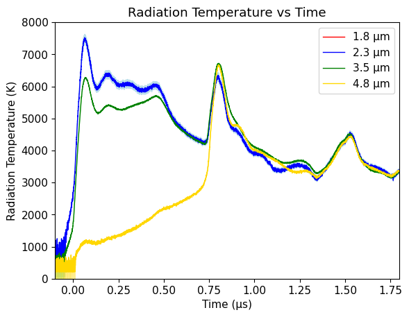
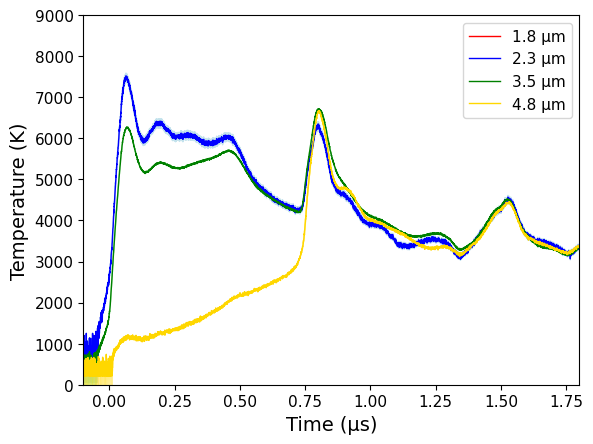
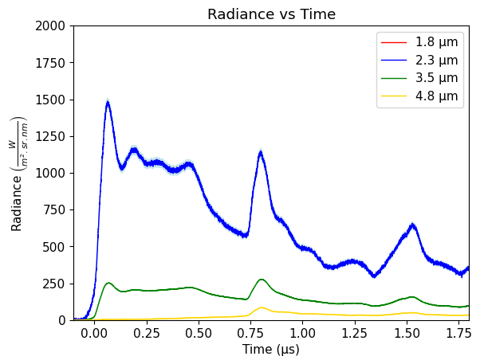
# interpolate the NIR data onto the same time base as the previous data
#s50time = fittime
#s50temp = calstreak[:,1]
#s50temperr = calstreak[:,2]
#s50pres = fitpres2
#s50us = fitus2
#s50up = fitup2
s50C2Tr = np.interp(s50time,C2.shot_t*1.e6,C2.Tr)
s50C3Tr = np.interp(s50time,C3.shot_t*1.e6,C3.Tr)
s50C4Tr = np.interp(s50time,C4.shot_t*1.e6,C4.Tr)
#plt.plot(s50time,s50temp,'+')
#plt.plot(s50time[ind50],s50temp[ind50],'+',label='SOP')
#plt.fill_between(s50time[ind50],s50temp[ind50]-s50temperr[ind50],s50temp[ind50]+s50temperr[ind50], color='blue', alpha = 0.1)
plt.plot(calstreak[:,0],calstreak[:,1],'k-',label='SOP')
plt.fill_between(calstreak[:,0],calstreak[:,1]-calstreak[:,2],calstreak[:,1]+calstreak[:,2], color='blue', alpha = 0.1)
#plt.plot(s50time,s50C2Tr,'+',label='2.3 um')
#plt.plot(C2.shot_t*1.e6,C2.Tr,label='2.3 um')
plt.plot(C2.shot_t*1.e6, C2.Tr, label='2.3 μm', linewidth=1,color='blue')
plt.fill_between(C2.shot_t*1.e6, C2.Tr-C2.Tr_er, C2.Tr+C2.Tr_er, alpha=0.8, color='lightblue')
plt.plot(C3.shot_t*1.e6, C3.Tr, label='3.5 μm', linewidth=1,color='green')
plt.fill_between(C3.shot_t*1.e6, C3.Tr-C3.Tr_er, C3.Tr+C3.Tr_er, alpha=0.4, color='lightgreen')
plt.plot(C4.shot_t*1.e6, C4.Tr, label='4.8 μm', linewidth=1,color='gold')
plt.plot([tend],[lasttemp],'rD',label='T end based on P')
plt.ylim(0,8000)
plt.xlim(-.1,1.2)
#plt.plot([.1,.1],[4000,6500])
#plt.plot([.2,.2],[4000,6500])
plt.xlabel('Time (microsec)')
plt.ylabel('Temperature (K)')
plt.title('Shot 50 Fused Silica Decay: Streak Camera and NIR Pyro')
plt.legend(loc='lower right')
plt.savefig('shot50/sop-nir-comp.pdf')
#plt.show()
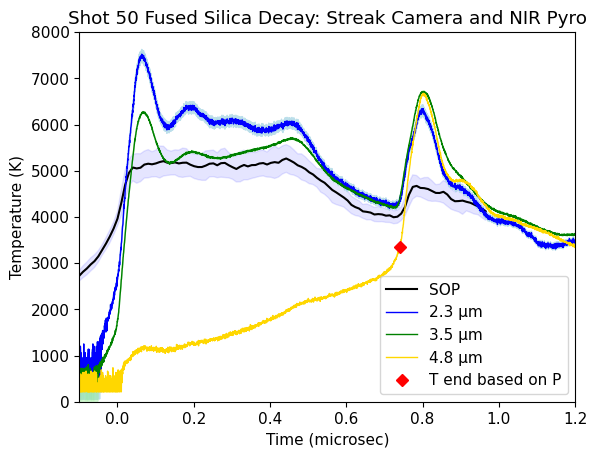
The NIR temperatures are shown assuming emissivity = 1. Lower emissivities shift the temperatures higher.
Each wavelength has a different absorption coefficient. Need to model to determine front temperature vs. time.
The 4.8 micron channel is most absorbing and needs an emissivity correction. The end of that record might represent the just before breakout temperature. We had to estimate the final pressure. Using the model FS hugoniot, the red diamond is the expected temperature just before breakout.
The 2.3 micron channel is most transparent. The high temperature might mean there is an impact flash but none was obvious in the SOP. So that discrepancy is a mystery. Note that the calibration data for this shot had a large error bar on the 2.3 micron channel.
Overall, these data support the idea that the visible thermal emission during the shock decay is being contaminated by hotter fused silica behind the shock front.
Would be worth fitting the 4.8 micron channel with a Luo type model.
The agreement between all the NIR channels during the fiber strike is interesting. Suggests that the calibration is good and the differences are related to the target material.
The disagreement between the NIR and SOP at fiber strike is likely related to different fiber composition.
Fit temperature vs time for absorbing 4.8 micron channel#
#Radiance vs time
Ltest = C4.c1/((C4.wvln**5)*(np.exp(C4.c2/(C4.wvln*C4.T))-1)) # W/m2/sr/m
Lsteady = C4.c1/((C4.wvln**5)*(np.exp(C4.c2/(C4.wvln*Tsteady))-1)) # W/m2/sr/m
print(Tsteady)
print(Lsteady)
s50dx = (max(xpos2)-xpos2)
if 0:
plt.plot(s50time,xpos2/1.e3)
plt.xlim(-0.1, .8)
plt.xlabel('Time (μs)')
plt.ylabel('Position (mm)')
plt.show()
plt.plot(s50time,s50dx/1.e3)
plt.xlim(-0.1, .8)
plt.xlabel('Time (μs)')
plt.ylabel('Shock front depth (mm)')
plt.show()
Lstart = Lsteady # W/m2/sr/m
abs_start = 8e-4# 1/m
#abs_start = 621.79e-6 # 1/m measured in lab fused silica
Dabs = np.interp(C4.shot_t*1.e6,s50time,s50dx)
Lprofile = np.zeros(len(C4.shot_t))
ind = np.where(C4.shot_t*1.e6 < tdecay)[0]
Lprofile[ind] = Lsteady
ind = np.where(C4.shot_t*1.e6 >= tdecay)[0]
Lprofile[ind] = Lsteady+(tdecay-C4.shot_t[ind]*1.e6)*15.e10
ind = np.where(C4.shot_t*1.e6 >= tkink)[0]
Lprofile[ind] = Lprofile[ind[0]-1]
#print(tdecay)
#plt.plot(C4.shot_t*1.e6,Lprofile)
#plt.xlim(-0.1, .8)
#plt.ylim(0,Lsteady*1.1)
#plt.show()
Lobs = Lstart*np.exp(-abs_start*Dabs)
Lobs2 = Lprofile*np.exp(-abs_start*Dabs)
Tprofile = ((1.4388*1.e-2)/C4.wvln)*(1/np.log((1.19118*1.e-16)/(Lprofile*C4.wvln**5)+1))
s50tempC4 = np.interp(s50time,C4.shot_t*1.e6,Tprofile)
Lbackout = C4.L/np.exp(-abs_start*Dabs)
Lbackout_up = (C4.L+C4.L_er)/np.exp(-abs_start*Dabs)
Lbackout_down = (C4.L-C4.L_er)/np.exp(-abs_start*Dabs)
Tbackout = ((1.4388*1.e-2)/C4.wvln)*(1/np.log((1.19118*1.e-16)/(Lbackout*C4.wvln**5)+1))
Tbackout_up = ((1.4388*1.e-2)/C4.wvln)*(1/np.log((1.19118*1.e-16)/(Lbackout_up*C4.wvln**5)+1))
Tbackout_down = ((1.4388*1.e-2)/C4.wvln)*(1/np.log((1.19118*1.e-16)/(Lbackout_down*C4.wvln**5)+1))
s50tempbackout = np.interp(s50time,C4.shot_t*1.e6,Tbackout)
s50tempbackout_up = np.interp(s50time,C4.shot_t*1.e6,Tbackout_up)
s50tempbackout_down = np.interp(s50time,C4.shot_t*1.e6,Tbackout_down)
tind = np.where(C4.shot_t*1.e6<tend)[0]
#print(Lobs)
emis=1.
if 0:
plt.plot(C4.shot_t[tind]*1.e6,emis*Lobs[tind]/1.e9,label='Observed if steady shock')
plt.plot(C4.shot_t[tind]*1.e6,Lprofile[tind]/1.e9,label='Assumed shock front')
plt.plot(C4.shot_t[tind]*1.e6,emis*Lobs2[tind]/1.e9,label='Observed shock front')
plt.xlim(-0.1, .8)
plt.ylim(0,Lsteady*1.1/1.e9)
plt.xlabel('Time (μs)')
plt.ylabel(r'Radiance $\left(\frac{W}{m^2.sr.nm} \right)$')
plt.legend()
plt.show()
plt.figure()
plt.plot(C4.shot_t[tind]*1.e6,Lprofile[tind]/1.e9,label='Assumed shock front')
plt.plot(C4.shot_t[tind]*1.e6, emis*Lobs[tind]/1.e9,label='Observed if steady shock')
plt.plot(C4.shot_t[tind]*1.e6, emis*Lobs2[tind]/1.e9,label='Observed with assumed shock front')
plt.plot(C4.shot_t[tind]*1.e6, C4.L[tind]/1.e9, label='4.8 μm', linewidth=1,color='gold')
plt.fill_between(C4.shot_t[tind]*1.e6, C4.L_plus[tind]/1.e9, C4.L_minus[tind]/1.e9, alpha=0.4, color='gold' )
plt.xlabel('Time (μs)')
plt.ylabel(r'Radiance $\left(\frac{W}{m^2.sr.nm} \right)$')
plt.title('4.8 μm Radiance vs Time')
plt.xlim(-0.1, .8)
plt.ylim(0,100)
plt.legend(loc='upper right')
plt.savefig('./shot50/shot50-4.8-model.pdf')
plt.show()
5170.920498064298
59516762063.92477
/var/folders/4z/xws_ywgj78sc494vpwymn9bw0000gn/T/ipykernel_47594/374914033.py:51: RuntimeWarning: invalid value encountered in log
Tbackout_down = ((1.4388*1.e-2)/C4.wvln)*(1/np.log((1.19118*1.e-16)/(Lbackout_down*C4.wvln**5)+1))
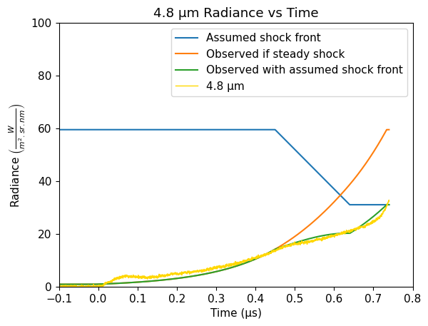
Save Shot 50 Analysis#
isort50=isort
# Saving the objects:
with open('shot50/shot50-analysis.pkl', 'wb') as f: # Python 3: open(..., 'wb')
pickle.dump([s50time, s50temp, s50temperr, s50pres, s50us, s50up, ind50, isort50,s50tempbackout,Tsteady,Tsteady_err,Psteady,usstart], f)
#with open(silicadatadir+'Amodeo-analysis/shot50-analysis.pkl', 'wb') as f: # Python 3: open(..., 'wb')
# pickle.dump([s50time, s50temp, s50temperr, s50pres, s50us, s50up, ind50, isort50,s50tempbackout,Tsteady,Tsteady_err,Psteady,usstart], f)
Plot shots 50 and 60#
# load shot 60
#with open(silicadatadir+'Amodeo-analysis/shot60-analysis.pkl', 'rb') as f:
with open('shot60/shot60-analysis.pkl', 'rb') as f:
s60time, s60temp, s60temperr, s60pres, s60us, s60us_err, s60up, ind60, isort60,s60Tsteady,s60Tsteady_err,s60Psteady,s60Psteady_err,s60Ussteady,s60Ussteady_err=pickle.load(f)
%run -i scripts/set_plotstyle
fig = plt.figure(figsize=fsize)
plt.xlabel('Pressure (GPa)')
plt.ylabel('Temperature (K)')
plt.title('Shot 50 and 60 Fused Silica Decay')
plt.plot(s50pres[ind50],s50temp[ind50],'+',color='darkviolet',label='Shot 50 visible')
plt.plot(s50pres[ind50],s50tempC4[ind50],'-',color='k',label='Shot 50 4.8 μm model')
plt.plot(s50pres[ind50[40::]],s50tempbackout[ind50[40::]],'+',color='dodgerblue',label='Shot 50 4.8 μm')
#plt.fill_between(s50pres[ind50[40::]],s50tempbackout_down[ind50[40::]],s50tempbackout_up[ind50[40::]], color='blue', alpha = 0.1)
plt.fill_between(s50pres[ind50[40::]],s50tempbackout[ind50[40::]]-Tsteady_err,s50tempbackout[ind50[40::]]+Tsteady_err, color='dodgerblue', alpha = 0.1)
plt.fill_between(s50pres[ind50[isort]],s50temp[ind50[isort]]-s50temperr[ind50[isort]],s50temp[ind50[isort]]+s50temperr[ind50[isort]], color='darkviolet', alpha = 0.1)
print(s50time[ind50[40]],tdecay)
# plot the shot 50 IM solution point
#68.23569784953546 1.4210854715202004e-14
#5170.920498064298 19.364571422900298
plt.errorbar(68.2,5170,fmt='D',mfc='white',mec='darkviolet',yerr=19)#,label='Shot 50')
#
plt.plot(s60pres[ind60],s60temp[ind60],'+',color='magenta',label='Shot 60')
plt.fill_between(s60pres[ind60[isort60]],s60temp[ind60[isort60]]-s60temperr[ind60[isort60]],s60temp[ind60[isort60]]+s60temperr[ind60[isort60]], color='magenta', alpha = 0.1)
# plot the shot 60 IM solution point
plt.errorbar(87.7,5250,fmt='D',mec='magenta',mfc='white',xerr=.3,yerr=27)#,label='Shot 60')
if 1:
#plt.errorbar(shockdat_list[B88fs['id']].P,shockdat_list[B88fs['id']].T,fmt='bo',mfc='white',yerr=shockdat_list[B88fs['id']].T_std,label=B88fs['lab'])
ind = np.where(shockdat_list[B88RRfs['id']].T>0)
plt.errorbar(shockdat_list[B88RRfs['id']].P[ind],shockdat_list[B88RRfs['id']].T[ind],fmt='bo',mfc='lightblue',yerr=shockdat_list[B88RRfs['id']].T_std[ind],label=B88RRfs['lab'])
plt.errorbar(shockdat_list[S80fs['id']].P,shockdat_list[S80fs['id']].T,fmt='bv',xerr=shockdat_list[S80fs['id']].P_std,yerr=shockdat_list[S80fs['id']].T_std,label=S80fs['lab'])
plt.errorbar(shockdat_list[S81fs['id']].P,shockdat_list[S81fs['id']].T,fmt='bx',label=S81fs['lab'])
for i in range(len(fs_good_list)):
plt.plot(fs_good_list[i].P,fs_good_list[i].T,'D',mfc='yellow',mec='k')
plt.xlim(20,120)
plt.ylim(2500,8000)
plt.plot(stsmcsmooth.P,stsmcsmooth.T,'m-',linewidth=3,label='Proposed melt curve')
# plt.plot(fs_hug_liq.P,fs_hug_liq.T,'b-',label='FS Liq Hug')
#plt.plot(fs_hug_RTK19.P,fs_hug_RTK19.T,'b-',label='FS Liq Hug Root')
plt.plot(fs_hug_liq.P,fs_hug_liq.T,'b-.',label='FS Liq Hug Fit')
if 0:
P3=90
T3 = np.interp(P3,stsmcsmooth.P,stsmcsmooth.T)
T2 = np.interp(fs_wiggle_P2,stsmcsmooth.P,stsmcsmooth.T)
T1 = np.interp(fs_wiggle_P1,stsmcsmooth.P,stsmcsmooth.T)
#S3 = np.interp(P3,stsmcsmooth.P,stsmcsmooth.S_l)
# S2 = np.interp(fs_wiggle_P2,stsmcsmooth.P,stsmcsmooth.S_s)
# S1 = np.interp(fs_wiggle_P1,stsmcsmooth.P,stsmcsmooth.S)
plt.plot(fs_wiggle_P1,T1,'D')
plt.plot(fs_wiggle_P2,T2,'D')
plt.plot(P3,T3,'D')
# print(fs_wiggle_P2,fs_wiggle_P1,P3,S2,S3)
# print(T2,T3,5400*(S3-S2),(S3-S2))
plt.plot(fs_hug_stv.P,fs_hug_stv.T,'b--')
plt.legend(loc='upper left')
plt.savefig('output-figs/shot50-60-comp-data.png')
plt.savefig('output-figs/shot50-60-comp-data.pdf')
plt.show()
0.4323366834170853 0.45
<Figure size 800x600 with 0 Axes>
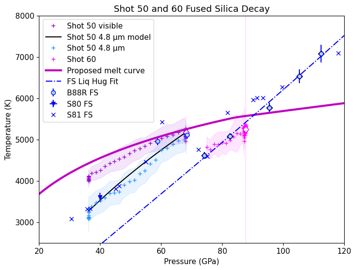
fig = plt.figure(figsize=(12, 6))
plt.rcParams.update({'font.size': 14})
plt.xlabel('Pressure (GPa)')
plt.ylabel('Temperature (K)')
plt.title('Fused Silica')
plt.plot(s50pres[ind50],s50temp[ind50],'+',color='darkviolet',label='SOP decaying shock')
plt.fill_between(s50pres[ind50[isort50]],s50temp[ind50[isort50]]-s50temperr[ind50[isort50]],s50temp[ind50[isort50]]+s50temperr[ind50[isort50]], color='blue', alpha = 0.1)
# plot the shot 50 IM solution point
#68.23569784953546 1.4210854715202004e-14
#5170.920498064298 19.364571422900298
plt.errorbar(68.2,5170,fmt='D',mfc='white',mec='darkviolet',yerr=19)#,label='Vis decaying shock')
#
plt.plot(s60pres[ind60],s60temp[ind60],'+',color='magenta',label='SOP decaying shock')
plt.fill_between(s60pres[ind60[isort60]],s60temp[ind60[isort60]]-s60temperr[ind60[isort60]],s60temp[ind60[isort60]]+s60temperr[ind60[isort60]], color='blue', alpha = 0.1)
# plot the shot 60 IM solution point
plt.errorbar(87.7,5250,fmt='D',mec='magenta',mfc='white',xerr=.3,yerr=27)#,label='Vis decaying shock')
if 1:
#plt.errorbar(shockdat_list[B88fs['id']].P,shockdat_list[B88fs['id']].T,fmt='bo',mfc='white',yerr=shockdat_list[B88fs['id']].T_std,label=B88fs['lab'])
ind = np.where(shockdat_list[B88RRfs['id']].T>0)
plt.errorbar(shockdat_list[B88RRfs['id']].P[ind],shockdat_list[B88RRfs['id']].T[ind],fmt='bo',mfc='lightblue',yerr=shockdat_list[B88RRfs['id']].T_std[ind],label=B88RRfs['lab'])
plt.errorbar(shockdat_list[S80fs['id']].P,shockdat_list[S80fs['id']].T,fmt='bv',xerr=shockdat_list[S80fs['id']].P_std,yerr=shockdat_list[S80fs['id']].T_std,label=S80fs['lab'])
plt.errorbar(shockdat_list[S81fs['id']].P,shockdat_list[S81fs['id']].T,fmt='bx',label=S81fs['lab'])
plt.xlim(20,120)
plt.ylim(2500,8000)
plt.plot(stsmcsmooth.P,stsmcsmooth.T,'m-',linewidth=3,label='Proposed melt curve')
#plt.legend()
plt.legend(loc='center left', bbox_to_anchor=(1, 0.5),fontsize=10)
plt.tight_layout()
plt.savefig(outputfigpath+'shot50-60-comp-data.png')
plt.savefig(outputfigpath+'shot50-60-comp-data.pdf')
plt.show()
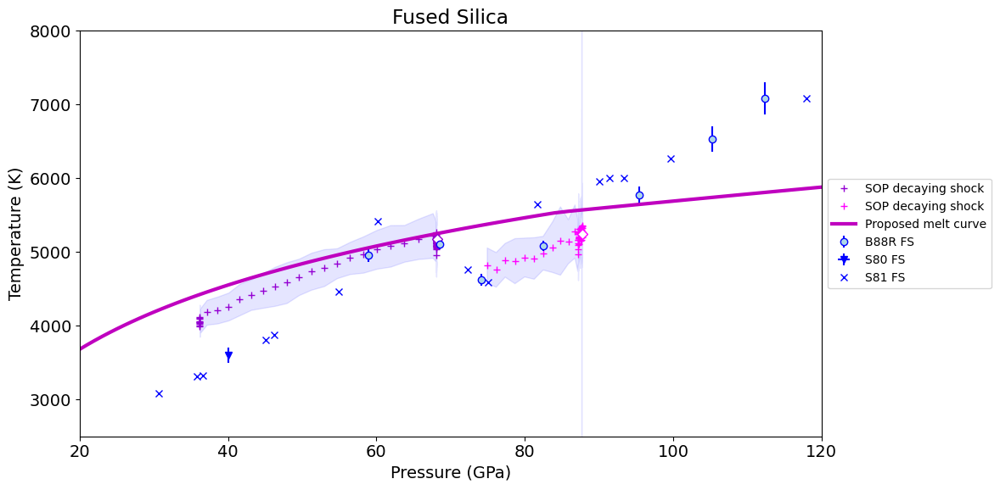
#fig = plt.figure(figsize=(12, 6))
#plt.rcParams.update({'font.size': 14})
#fig = plt.figure(figsize=(10, 8))
#plt.rcParams.update({'font.size': 24})
plt.rcParams.update(plt.rcParamsDefault)
fsize=(8, 6) # default figure size in inches
plt.figure(figsize=fsize)
fss=12 # figure font size
plt.rcParams.update({'font.size': fss})
lfss = 10 # legend font size
tss=12
isort60p = np.arange(47,58,1)
plt.xlabel('Pressure (GPa)')
plt.ylabel('Temperature (K)')
plt.title('Fused Silica')
plt.plot(s50pres[ind50],s50temp[ind50],'+',color='darkviolet',label='Vis decaying shock')
plt.fill_between(s50pres[ind50[isort50]],s50temp[ind50[isort50]]-s50temperr[ind50[isort50]],s50temp[ind50[isort50]]+s50temperr[ind50[isort50]], color='blue', alpha = 0.1)
# plot the shot 50 IM solution point
#68.23569784953546 1.4210854715202004e-14
#5170.920498064298 19.364571422900298
plt.errorbar(68.2,5170,fmt='D',mfc='white',mec='darkviolet',yerr=19)#,label='Vis decaying shock')
#
plt.plot(s60pres[ind60[isort60p]],s60temp[ind60[isort60p]],'+',color='magenta',label='Vis decaying shock')
plt.fill_between(s60pres[ind60[isort60p]],s60temp[ind60[isort60p]]-s60temperr[ind60[isort60p]],s60temp[ind60[isort60p]]+s60temperr[ind60[isort60p]], color='blue', alpha = 0.1)
# plot the shot 60 IM solution point
plt.errorbar(87.7,5250,fmt='D',mec='magenta',mfc='white',xerr=.3,yerr=27)#,label='Vis decaying shock')
plt.plot(s50pres[ind50[40::]],s50tempbackout[ind50[40::]],'+',color='dodgerblue',label='4.8 μm decaying shock')
plt.fill_between(s50pres[ind50[40::]],s50tempbackout[ind50[40::]]-Tsteady_err,s50tempbackout[ind50[40::]]+Tsteady_err, color='dodgerblue', alpha = 0.1)
if 1:
#plt.errorbar(shockdat_list[B88fs['id']].P,shockdat_list[B88fs['id']].T,fmt='bo',mfc='white',yerr=shockdat_list[B88fs['id']].T_std,label=B88fs['lab'])
ind = np.where(shockdat_list[B88RRfs['id']].T>0)
plt.errorbar(shockdat_list[B88RRfs['id']].P[ind],shockdat_list[B88RRfs['id']].T[ind],fmt='bo',mfc='lightblue',yerr=shockdat_list[B88RRfs['id']].T_std[ind],label=B88RRfs['lab'])
plt.errorbar(shockdat_list[S80fs['id']].P,shockdat_list[S80fs['id']].T,fmt='bv',xerr=shockdat_list[S80fs['id']].P_std,yerr=shockdat_list[S80fs['id']].T_std,label=S80fs['lab'])
plt.errorbar(shockdat_list[S81fs['id']].P,shockdat_list[S81fs['id']].T,fmt='bx',label=S81fs['lab'])
plt.xlim(20,120)
plt.ylim(2500,8000)
plt.plot(stsmcsmooth.P,stsmcsmooth.T,'m-',linewidth=3,label='Proposed melt curve')
ind=np.where(fs_hug_liq.P>fs_startliq_P)[0]
plt.plot(fs_hug_liq.P[ind],fs_hug_liq.T[ind],'b-',linewidth=3)
ind=np.where(fs_hug_stv.P<fs_wiggle_P2)[0]
plt.plot(fs_hug_stv.P[ind],fs_hug_stv.T[ind],'b-',linewidth=3)
plt.legend(fontsize=lfss)
#plt.legend(loc='center left', bbox_to_anchor=(1, 0.5),fontsize=10)
plt.tight_layout()
plt.savefig(outputfigpath+'shot50-60-comp-data2.png')
plt.savefig(outputfigpath+'shot50-60-comp-data2.pdf')
plt.show()
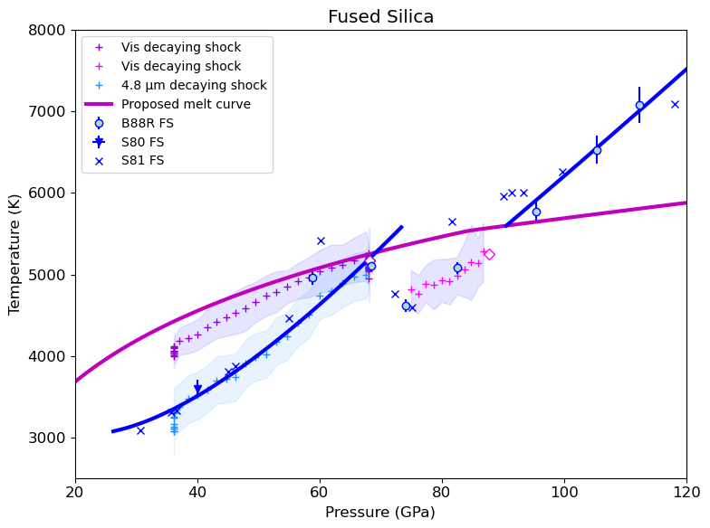
%run -i scripts/set_plotstyle.py # customize matplotlib
%run -i scripts/set_colors.py # custom colors
plt.rcParams.update({'font.size': 20})
plt.figure(figsize=fsize)
plt.plot(calstreak[:,0],calstreak[:,1],'-',color='deepskyblue')
plt.fill_between(calstreak[:,0],calstreak[:,1]-calstreak[:,2],calstreak[:,1]+calstreak[:,2], color='deepskyblue', alpha = 0.2,label='Visible')
#plt.plot(s50time,s50C2Tr,'+',label='2.3 um')
#plt.plot(C2.shot_t*1.e6,C2.Tr,label='2.3 um')
#plt.plot(C2.shot_t*1.e6, C2.Tr, label='2.3 μm', linewidth=1,color='blue')
#plt.fill_between(C2.shot_t*1.e6, C2.Tr-C2.Tr_er, C2.Tr+C2.Tr_er, alpha=0.8, color='lightblue')
#plt.plot(C3.shot_t*1.e6, C3.Tr, label='3.5 μm', linewidth=1,color='green')
#plt.fill_between(C3.shot_t*1.e6, C3.Tr-C3.Tr_er, C3.Tr+C3.Tr_er, alpha=0.4, color='lightgreen')
plt.plot(C4.shot_t*1.e6, C4.Tr, label='4.8 μm', linewidth=1,color='orange')
plt.fill_between(C4.shot_t*1.e6, C4.Tr-C4.Tr_er, C4.Tr+C4.Tr_er, alpha=0.2, color='orange')
#print(C4.Tr_er)
#plt.plot([tend],[lasttemp],'rD',label='T end based on P')
plt.ylim(0,7000)
plt.xlim(0,tend)
plt.xlabel('Time (μs)')
plt.ylabel('Apparent Temperature (K)')
tfss=18
plt.plot([tdecay,tdecay],[0,7000],'--',color='grey')
plt.plot([tkink,tkink],[0,7000],'--',color='grey')
plt.text(0.17,6000,'Steady',fontsize=tfss)
plt.text(0.5,6000,'Decay',fontsize=tfss)
plt.text(0.64,6000,'Steady',fontsize=tfss)
plt.text(0.02,6500,'A',fontsize=tfss)
#plt.title('Shot 50 Fused Silica Decay: Streak Camera and NIR Pyro')
plt.legend(loc='lower right',framealpha=1,fontsize=18)
plt.tight_layout()#pad=0.4,w_pad=0.5,h_pad=1.0)
plt.savefig(outputfigpath+'shot50-sop-48-comp.pdf')
plt.savefig(figurefigpath+'shot50-sop-48-comp.pdf')
plt.show()
<Figure size 800x600 with 0 Axes>
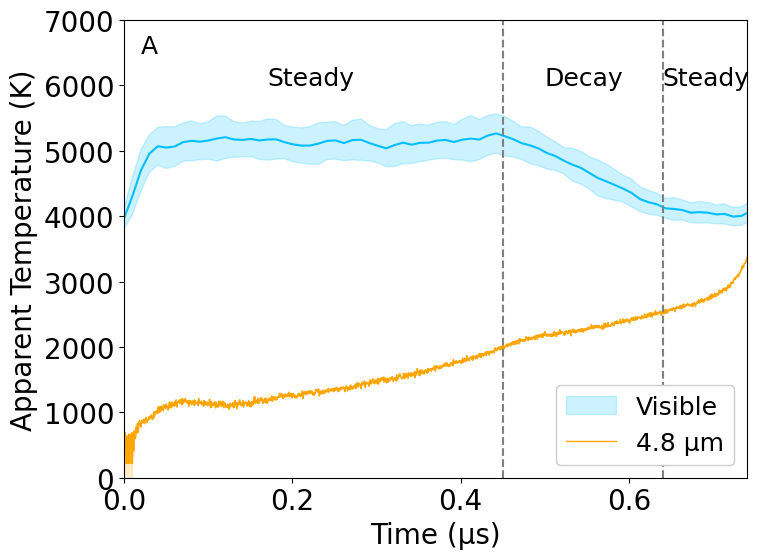
#Radiance vs time
%run -i scripts/set_plotstyle.py # customize matplotlib
%run -i scripts/set_colors.py # custom colors
plt.rcParams.update({'font.size': 20})
Ltest = C4.c1/((C4.wvln**5)*(np.exp(C4.c2/(C4.wvln*C4.T))-1)) # W/m2/sr/m
Lsteady = C4.c1/((C4.wvln**5)*(np.exp(C4.c2/(C4.wvln*Tsteady))-1)) # W/m2/sr/m
print(Tsteady)
print(Lsteady)
s50dx = (max(xpos2)-xpos2)
if 0:
plt.plot(s50time,xpos2/1.e3)
plt.xlim(-0.1, .8)
plt.xlabel('Time (μs)')
plt.ylabel('Position (mm)')
plt.show()
plt.plot(s50time,s50dx/1.e3)
plt.xlim(-0.1, .8)
plt.xlabel('Time (μs)')
plt.ylabel('Shock front depth (mm)')
plt.show()
Lstart = Lsteady # W/m2/sr/m
abs_start = 8e-4# 1/m
#abs_start = 621.79e-6 # 1/m measured in lab fused silica
Dabs = np.interp(C4.shot_t*1.e6,s50time,s50dx)
Lprofile = np.zeros(len(C4.shot_t))
ind = np.where(C4.shot_t*1.e6 < tdecay)[0]
Lprofile[ind] = Lsteady
ind = np.where(C4.shot_t*1.e6 >= tdecay)[0]
Lprofile[ind] = Lsteady+(tdecay-C4.shot_t[ind]*1.e6)*15.e10
ind = np.where(C4.shot_t*1.e6 >= tkink)[0]
Lprofile[ind] = Lprofile[ind[0]-1]
#print(tdecay)
#plt.plot(C4.shot_t*1.e6,Lprofile)
#plt.xlim(-0.1, .8)
#plt.ylim(0,Lsteady*1.1)
#plt.show()
Lobs = Lstart*np.exp(-abs_start*Dabs)
Lobs2 = Lprofile*np.exp(-abs_start*Dabs)
Tprofile = ((1.4388*1.e-2)/C4.wvln)*(1/np.log((1.19118*1.e-16)/(Lprofile*C4.wvln**5)+1))
s50tempC4 = np.interp(s50time,C4.shot_t*1.e6,Tprofile)
Lbackout = C4.L/np.exp(-abs_start*Dabs)
Lbackout_up = (C4.L+C4.L_er)/np.exp(-abs_start*Dabs)
Lbackout_down = (C4.L-C4.L_er)/np.exp(-abs_start*Dabs)
Tbackout = ((1.4388*1.e-2)/C4.wvln)*(1/np.log((1.19118*1.e-16)/(Lbackout*C4.wvln**5)+1))
Tbackout_up = ((1.4388*1.e-2)/C4.wvln)*(1/np.log((1.19118*1.e-16)/(Lbackout_up*C4.wvln**5)+1))
Tbackout_down = ((1.4388*1.e-2)/C4.wvln)*(1/np.log((1.19118*1.e-16)/(Lbackout_down*C4.wvln**5)+1))
s50tempbackout = np.interp(s50time,C4.shot_t*1.e6,Tbackout)
s50tempbackout_up = np.interp(s50time,C4.shot_t*1.e6,Tbackout_up)
s50tempbackout_down = np.interp(s50time,C4.shot_t*1.e6,Tbackout_down)
tind = np.where(C4.shot_t*1.e6<tend)[0]
#print(Lobs)
emis=1.
if 0:
plt.plot(C4.shot_t[tind]*1.e6,emis*Lobs[tind]/1.e9,label='Observed if steady shock')
plt.plot(C4.shot_t[tind]*1.e6,Lprofile[tind]/1.e9,label='Assumed shock front')
plt.plot(C4.shot_t[tind]*1.e6,emis*Lobs2[tind]/1.e9,label='Observed shock front')
plt.xlim(-0.1, .8)
plt.ylim(0,Lsteady*1.1/1.e9)
plt.xlabel('Time (μs)')
plt.ylabel(r'Radiance $\left(\frac{W}{m^2.sr.nm} \right)$')
plt.legend()
plt.show()
#fig, ax = plt.subplots(3,1,figsize=fsize3)
plt.figure(figsize=fsize)
plt.plot(C4.shot_t[tind]*1.e6,Lprofile[tind]/1.e9,label='Model shock front')
#plt.plot(C4.shot_t[tind]*1.e6, emis*Lobs[tind]/1.e9,label='Observed if steady shock')
plt.plot(C4.shot_t[tind]*1.e6, emis*Lobs2[tind]/1.e9,label='Observed with absorption')
plt.plot(C4.shot_t[tind]*1.e6, C4.L[tind]/1.e9, label='4.8 μm', linewidth=1,color='orange')
plt.fill_between(C4.shot_t[tind]*1.e6, C4.L_plus[tind]/1.e9, C4.L_minus[tind]/1.e9, alpha=0.4, color='gold' )
plt.text(0.02,80,'B',fontsize=18)
plt.xlabel('Time (μs)')
plt.ylabel('Radiance (W / (m² sr nm))')
#plt.title('4.8 μm Radiance vs Time')
plt.xlim(0,tend)
plt.ylim(0,85)
plt.legend(fontsize=18,loc='upper right')
plt.tight_layout()
plt.savefig('./shot50/shot50-4.8-model.pdf')
plt.savefig(figurefigpath+'shot50-4.8-model.pdf')
plt.show()
5170.920498064298
59516762063.92477
/var/folders/4z/xws_ywgj78sc494vpwymn9bw0000gn/T/ipykernel_47594/3196182585.py:53: RuntimeWarning: invalid value encountered in log
Tbackout_down = ((1.4388*1.e-2)/C4.wvln)*(1/np.log((1.19118*1.e-16)/(Lbackout_down*C4.wvln**5)+1))
<Figure size 800x600 with 0 Axes>
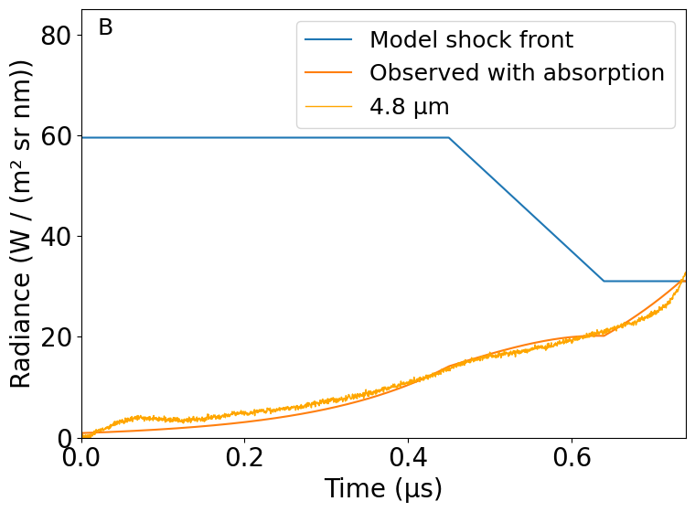